NIST IR 7771 日本語訳
英語タイトル : Conformance Test Architecture for Biometric Data Interchange Formats - Version Beta 2.0日本語タイトル : 生体データ交換フォーマットの適合性試験アーキテクチャ（Version Beta 2.0）
公開日 : 2011-02-28
原文URL : https://csrc.nist.gov/pubs/ir/7771/final
翻訳編集 : 自動生成（有志による非公式の日本語訳）, 原文取得日 : 2026-10-31, 訳文 : 331 / 335 ブロック
[要約] NIST IR 7771 は、最近公開された適合性試験アーキテクチャ（CTA）Beta 2.0 の技術的特性を論じる報告書です。このアーキテクチャは、生体データ交換フォーマットの実装を試験するように設計された適合性試験スイート（CTS）などをサポートします。本書は、CTA のモジュール間通信方法、主要な機能、試験やデコードの操作などの上位レベルのシーケンス図を示し、バイナリデータの試験の紹介、フィールドのグループごとの構造試験、テストケースについても扱います。関連ツールの開発に関する現在進行中の作業も示しています。
NISTIR 7771
NISTIR 7771
Conformance Test Architecture for Biometric Data Interchange Formats - Version Beta 2.0
生体データ交換フォーマットの適合性試験アーキテクチャ - Version Beta 2.0
Fernando L. Podio
Dylan Yaga
Mark Jerde
Fernando L. Podio
Dylan Yaga
Mark Jerde
［NIST のロゴ。公的な標章のため、この非公式サイトには掲載していません。原本 PDF を参照してください。］
NISTIR 7771
NISTIR 7771
Conformance Test Architecture for Biometric Data Interchange Formats - Version Beta 2.0
生体データ交換フォーマットの適合性試験アーキテクチャ - Version Beta 2.0
Fernando L. Podio
Dylan Yaga
Mark Jerde
Fernando L. Podio
Dylan Yaga
Mark Jerde
February 2011
2011 年 2 月
U.S. Department of Commerce
Gary Locke, Secretary
米国商務省
Gary Locke 長官
National Institute of Standards and Technology
Patrick D. Gallagher, Director
米国国立標準技術研究所
Patrick D. Gallagher、所長
Reports on Computer Systems Technology
コンピュータシステム技術に関する報告書
The Information Technology Laboratory (ITL) at the National Institute of Standards and Technology (NIST) promotes the U.S. economy and public welfare by providing technical leadership for the Nation’s measurement and standards infrastructure. ITL develops tests, test methods, reference data, proof of concept implementations, and technical analysis to advance the development and productive use of information technology. ITL’s responsibilities include the development of technical, physical, administrative, and management standards and guidelines for the cost-effective security and privacy of sensitive unclassified information in Federal computer systems. This Interagency Report discusses ITL’s research, guidance, and outreach efforts in computer security, and its collaborative activities with industry, government, and academic organizations.
National Institute of Standards and Technology（NIST）の Information Technology Laboratory（ITL）は、国の測定・標準基盤に対する技術的なリーダーシップを提供することで、米国の経済と公共の福祉を促進しています。ITL は、情報技術の発展と生産的な利用を進めるため、試験、試験方法、参照データ、概念実証実装および技術分析を開発しています。ITL の責務には、連邦コンピュータシステムにおける機微な非機密情報のセキュリティとプライバシーを費用対効果よく確保するための、技術的、物理的、管理的および運用管理上の標準とガイドラインの策定が含まれます。この Interagency Report は、コンピュータセキュリティに関する ITL の研究、ガイダンスおよびアウトリーチの取り組みと、産業界、政府および学術機関との協力活動について論じています。
National Institute of Standards and Technology Interagency Report
37 pages (2011)
National Institute of Standards and Technology Interagency Report
37 ページ（2011 年）
Certain commercial entities, equipment, or materials may be identified in this document in order to describe an experimental procedure or concept adequately. Such identification is not intended to imply recommendation or endorsement by the National Institute of Standards and Technology, nor is it intended to imply that the entities, materials, or equipment are necessarily the best available for the purpose.
この文書では、実験手順や概念を適切に説明するために、特定の商業的主体、機器または資材を明示している場合があります。このような明示は、National Institute of Standards and Technology による推奨や推薦を意味するものではなく、また、それらの主体、資材または機器がその目的に利用できる最良のものであることを必ずしも意味するものでもありません。
Abstract
概要
The success of biometric applications is particularly dependent on the interoperability of biometric systems. Deploying these systems requires a comprehensive portfolio of biometric standards developed in support of interoperability and data interchange. A number of these domestic and international standards have been published and others are under development. The existence of these standards alone is not enough to demonstrate that products meet the technical requirements specified in the standards. Conformance testing captures the technical description of a specification and measures whether an implementation faithfully implements the specification. The Computer Security Division of NIST/ITL supports conformity assessment efforts through active technical participation in the development of conformance testing methodology standards and the development of associated conformance test architectures (CTA) and test suites (CTS). This NIST IR discusses the technological characteristics of the recently released CTA Beta 2.0. This architecture supports CTSs such as those designed to test implementations of biometric data interchange data formats. The information provided includes CTA module communication methods, key CTA features and high-level sequence diagrams such as testing and decoding operations. It also addresses an introduction to testing binary data, structure testing by groups of fields and a discussion on test cases. Ongoing work on related tools development is also presented.
生体認証アプリケーションの成否は、生体認証システムの相互運用性に特に左右されます。これらのシステムを展開するには、相互運用性とデータ交換を支えるために策定された、包括的な生体認証標準群が必要です。これらの国内標準および国際標準の多くが既に発行されており、ほかにも策定中のものがあります。しかし、これらの標準が存在するだけでは、製品が標準に規定された技術要件を満たすことを示すには十分ではありません。適合性試験は、仕様の技術的な記述を捉え、実装がその仕様を忠実に実装しているかどうかを測定します。NIST/ITL の Computer Security Division は、適合性試験方法論の標準の策定に技術面で積極的に参加するとともに、関連する適合性試験アーキテクチャ（CTA）と試験スイート（CTS）を開発することで、適合性評価の取り組みを支援しています。この NIST IR は、最近公開された CTA Beta 2.0 の技術的特性を論じています。このアーキテクチャは、生体データ交換フォーマットの実装を試験するように設計された CTS などをサポートします。提供する情報には、CTA のモジュール間通信方法、CTA の主要な機能、および試験やデコードの操作などの上位レベルのシーケンス図が含まれます。また、バイナリデータの試験の紹介、フィールドのグループごとの構造試験、およびテストケースに関する議論も扱います。関連ツールの開発に関する現在進行中の作業も示します。
Disclaimer
免責事項
Statements made in this paper should not be interpreted as standards, guidelines, best practices, or recommendations for specific changes to any other NIST publications.
この論文に示された記述は、標準、ガイドライン、ベストプラクティス、または他の NIST 刊行物に対する具体的な変更の推奨として解釈されるべきではありません。
Table of Contents
目次
List of Figures
図の一覧
List of Tables
表の一覧
1 Introduction to Biometric Standards and Conformance Testing
1 生体認証標準と適合性試験の紹介
1.1 Current Biometric Standard Development Activities in Support of Interoperability and Data Interchange
1.1 相互運用性とデータ交換を支える現在の生体認証標準策定活動
One of the critical issues related to secured Information Technology (IT) systems and applications is the verification of the users’ identities. The relationship between a biometric characteristic (e.g., something that you are) and the users of a system or application provides a binding that is stronger than the binding that can be achieved between a user and other technologies that are currently in use for “personal authentication” such as passwords (e.g., something that you know) and tokens (e.g., something that you have). For decades, biometric technologies were used primarily in law enforcement applications. However, over the past several years the marketplace for biometrics solutions has significantly widened. Currently, they are increasingly being required in public and private sector applications worldwide to authenticate a person's identity, secure national borders and restrict access to secure sites including buildings and computer networks.
安全な情報技術（IT）システムとアプリケーションに関する重要な課題の一つは、利用者の本人確認です。生体特性（例: あなたが何者であるか）とシステムやアプリケーションの利用者との関係は、パスワード（例: あなたが知っていること）やトークン（例: あなたが持っているもの）など、現在使われている「個人認証」のための他の技術で利用者との間に実現できる結び付きよりも強い結び付きをもたらします。何十年もの間、生体認証技術は主に法執行の用途で使われてきました。しかし、ここ数年で生体認証ソリューションの市場は大きく広がりました。現在では、世界中の官民のアプリケーションで、個人の身元の認証、国境の警備、建物やコンピュータネットワークを含む安全な場所へのアクセス制限のために、生体認証がますます求められています。
The success of biometric applications is particularly dependent on the interoperability of biometric systems. Deploying these systems requires a comprehensive portfolio of biometric standards developed in support of interoperability and data interchange. In the U.S., the InterNational Committee for Information Technology Standards (INCITS) Technical Committee M1 – Biometrics was established with the purpose to ensure a high priority, focused, and comprehensive approach in the United States for the rapid development and approval of formal national and international biometric standards [1]. A number of American National Standards developed by INCITS M1 have been published [2]. They include biometric technical interface standards, data interchange formats, conformance and performance testing methodologies and biometric application profiles.
生体認証アプリケーションの成否は、生体認証システムの相互運用性に特に左右されます。これらのシステムを展開するには、相互運用性とデータ交換を支えるために策定された、包括的な生体認証標準群が必要です。米国では、InterNational Committee for Information Technology Standards（INCITS）の Technical Committee M1 – Biometrics が、正式な国内標準および国際標準の生体認証標準を迅速に策定・承認するための、優先度が高く、焦点を絞った包括的な取り組みを米国で確実に進めることを目的として設立されました [1]。INCITS M1 が策定した American National Standard は、すでに多数が発行されています [2]。これらには、生体認証の技術インタフェース標準、データ交換フォーマット、適合性試験および性能試験の方法論、生体認証のアプリケーションプロファイルが含まれます。
NIST/ITL is responsible for the development of the ANSI/NIST ITL standard "Data Format for the Interchange of Fingerprint, Facial & Other Biometric Information". NIST/ITL (and its predecessor organizations) has been accredited by ANSI as a standards developer since October 5, 1984. NIST/ITL is accredited to develop voluntary consensus standards as a sponsor using the ANSI Canvass Method. This standard is used by law enforcement, intelligence, military, and homeland security organizations throughout the world. The current version of the ANSI/NIST-ITL standard is: Part 1 – (ANSI/NIST-ITL 1-2007) in Traditional Format and Part 2 – (ANSI/NIST-ITL 2-2008) in NIEM1-conformant XML format [3].
NIST/ITL は、ANSI/NIST ITL 標準 "Data Format for the Interchange of Fingerprint, Facial & Other Biometric Information" の策定を担当しています。NIST/ITL（およびその前身の組織）は、1984 年 10 月 5 日から ANSI により標準策定機関として認定されています。NIST/ITL は、ANSI Canvass Method を用いるスポンサーとして、任意のコンセンサス標準を策定する認定を受けています。この標準は、世界中の法執行機関、情報機関、軍および国土安全保障の組織で使われています。ANSI/NIST-ITL 標準の現行版は、第 1 部 – （ANSI/NIST-ITL 1-2007）の従来形式と、第 2 部 –（ANSI/NIST-ITL 2-2008）の NIEM1 準拠 XML 形式です [3]。
ISO/IEC JTC 1/SC 37 - Biometrics was established in June 2002 and is responsible for the development of a large portfolio of international biometric standards in support of interoperability and data interchange. Currently the subcommittee’s membership includes twenty-eight national bodies, ten observer countries and a number of liaison organizations [4]. At the present time, the subcommittee is developing the “second generation” of biometric standards with the goal of improving the existing standards, adding functionality to the published standards and reflecting technology innovations and new customers’ needs. At the time of publication, forty-four international standards and six technical reports developed by the subcommittee have been published [5]. In addition to the type of standards developed by INCITS M1, ISO/IEC JTC 1/SC 37 is responsible for the development of biometric sample quality standards and standards and technical reports in support of cross jurisdictional issues related to the utilization of biometric technologies in commercial applications. The subcommittee is also developing a harmonized biometric vocabulary to serve the standards community as well as other customers.
ISO/IEC JTC 1/SC 37 - Biometrics は 2002 年 6 月に設立され、相互運用性とデータ交換を支える国際的な生体認証標準の大規模な体系の策定を担当しています。現在、この分科委員会の会員には 28 の国家機関、10 のオブザーバー国、および複数のリエゾン組織が含まれています [4]。現時点で、この分科委員会は、既存の標準の改善、発行済みの標準への機能追加、技術革新と新たな顧客ニーズの反映を目標として、「第二世代」の生体認証標準を策定しています。本書の発行時点で、この分科委員会が策定した 44 の国際標準と 6 つの技術報告書が発行されています [5]。INCITS M1 が策定する種類の標準に加えて、ISO/IEC JTC 1/SC 37 は、生体サンプル品質の標準、および商用アプリケーションでの生体認証技術の利用に伴う管轄をまたぐ問題を支える標準と技術報告書の策定も担当しています。この分科委員会は、標準コミュニティやその他の顧客の役に立つよう、調和のとれた生体認証用語集も策定しています。
1.2 Overview of Conformance Testing
1.2 適合性試験の概要
The existence of base biometric standards alone (e.g., biometric data interchange standards, technical interface standards) is not enough to demonstrate that products meet the technical requirements specified in the standards. Conformance testing captures the technical description of a specification and measures whether an implementation faithfully implements the specification. INCITS M1 and JTC 1/SC 37 are responsible for the development of conformance testing methodology standards. At the present time, a number of these standards have been published and others are under development. They specify conformance testing methodology standards for biometric technical interfaces (e.g., BioAPI specification developed in INCITS M1 and JTC 1/SC 37) and biometric data interchange standard formats (e.g., 1st and 2nd generation of international biometric data interchange formats published or under development in JTC 1/SC 37).
基本となる生体認証標準（例: 生体データ交換標準、技術インタフェース標準）が存在するだけでは、製品が標準に規定された技術要件を満たしていることを示すには十分ではありません。適合性試験では、仕様の技術的記述を捉え、実装が仕様を忠実に実装しているかどうかを測定します。INCITS M1 と JTC 1/SC 37 は、適合性試験方法論標準の策定を担当しています。現時点で、これらの標準のいくつかは発行済みであり、ほかにも策定中のものがあります。これらは、生体認証の技術インタフェース（例: INCITS M1 と JTC 1/SC 37 で策定された BioAPI 仕様）および生体データ交換標準フォーマット（例: JTC 1/SC 37 で発行済み、または策定中の第 1 世代（1st）および第 2 世代（2nd）の国際生体データ交換フォーマット）に対する適合性試験方法論標準を規定しています。
The Computer Security Division (CSD) of NIST/ITL supports the development of biometric conformance testing methodology standards and other conformity assessment efforts through active technical participation in the development of these standards and the development of associated conformance test architectures and test suites. NIST/ITL CSD develops these conformance test tools to support users that require conformance to selected biometric standards and to also support product developers interested in conforming to biometric standards by using the same testing tools available to users. These test tools support the possible establishment of conformity assessment programs to validate conformance to biometric standards. Conformance testing provides developers, users, and purchasers, with increased levels of confidence in product quality and increases the probability of successful interoperability.
NIST/ITL の Computer Security Division（CSD）は、これらの標準の策定に技術面で積極的に参加するとともに、関連する適合性試験アーキテクチャと試験スイートを開発することで、生体認証の適合性試験方法論標準の策定およびその他の適合性評価の取り組みを支援しています。NIST/ITL CSD は、選択された生体認証標準への適合を必要とする利用者を支援するため、また、利用者と同じ試験ツールを使って生体認証標準への適合を目指す製品開発者を支援するために、これらの適合性試験ツールを開発しています。これらの試験ツールは、生体認証標準への適合を検証する適合性評価プログラムを設立する可能性を支えます。適合性試験は、開発者、利用者および購入者に対して、製品品質への信頼を高め、相互運用が成功する可能性を高めます。
1.3 Previous and Current Development Work
1.3 これまでの開発作業と現在の開発作業
1.3.1 BioAPI Conformance Test Suite
1.3.1 BioAPI 適合性試験スイート
In 2006, NIST/ITL CSD released a BioAPI Conformance Test Suite (CTS) developed to test implementations of ANSI INCITS 358-2002, the BioAPI specification. This software tool was developed to help users verify the conformance of Biometric Service Providers to the BioAPI Specification 1.1 [6]. NIST/ITL CSD also co-sponsored with other members of INCITS M1 the development of a conformance testing methodology standard for BioAPI. This standard was published in 2008 as ANSI INCITS 429-2008, Information technology - Conformance Testing Methodology for ANSI INCITS 358-2002 BioAPI Specification. The BioAPI CTS implementation was developed using concepts and principles specified in the conformance testing methodology standard. This CTS was thoroughly tested with a number of commercially available vendor biometric subsystems for different modalities (e.g., face, iris and fingerprint recognition) claiming conformance to the BioAPI standard. The test results were successfully cross-validated with another similar CTS independently developed by DoD’s Biometric Task Force. The National Science and Technology Council Subcommittee on Biometrics and Identity Management listed the BioAPI CTS developments as one of the “Technology Successes” of 2006.
2006 年に、NIST/ITL CSD は、BioAPI 仕様である ANSI INCITS 358-2002 の実装を試験するために開発した BioAPI Conformance Test Suite（CTS）を公開しました。このソフトウェアツールは、利用者が Biometric Service Provider の BioAPI Specification 1.1 [6] への適合性を検証できるように開発されました。NIST/ITL CSD はまた、INCITS M1 の他のメンバーと共同で、BioAPI の適合性試験方法論標準の策定を支援しました。この標準は 2008 年に ANSI INCITS 429-2008, Information technology - Conformance Testing Methodology for ANSI INCITS 358-2002 BioAPI Specification として発行されました。BioAPI CTS の実装は、この適合性試験方法論標準に規定された概念と原則を用いて開発されました。この CTS は、BioAPI 標準への適合を主張する、さまざまなモダリティ（例: 顔、虹彩、指紋の認識）の市販ベンダー製生体認証サブシステムを用いて、徹底的に試験されました。試験結果は、米国国防総省の Biometric Task Force が独自に開発した同様の別の CTS と照合して検証され、結果は一致しました。National Science and Technology Council の Subcommittee on Biometrics and Identity Management は、BioAPI CTS の開発を 2006 年の「Technology Successes」の一つに挙げました。
1.3.2 Conformance Test Architecture for Biometric Information Records - Beta 1.1
1.3.2 Biometric Information Record 向け適合性試験アーキテクチャ - Beta 1.1
In August 2008 NIST/ITL CSD released a conformance test architecture for Biometric Information Records and a Conformance Test Suite (CTS) for Patron Format A data structures specified in ANSI INCITS 398-2008, Information technology - Common Biometric Exchange Formats Framework [7]. The CTS for Patron Format A supported by this conformance testing architecture was developed to help users determine whether binary file implementations of Biometric Information Records (BIRs) based on this Patron Format conform to the standard. NIST/ITL CSD sponsored in INCITS M1 development of a conformance testing methodology standard for CBEFF (Common Biometric Exchange Format Framework) data structures specified in ANSI INCITS 398-2008 and submitted to INCITS M1 the test assertions and related test cases developed for the Patron Format A Conformance Test Suite as well as test assertions and test cases for other Patron Formats specified in the ANSI INCITS 398-2008 standard.
2008 年 8 月に、NIST/ITL CSD は、Biometric Information Records 向けの適合性試験アーキテクチャと、ANSI INCITS 398-2008, Information technology - Common Biometric Exchange Formats Framework [7] に規定された Patron Format A のデータ構造向けの Conformance Test Suite（CTS）を公開しました。この適合性試験アーキテクチャがサポートする Patron Format A 向けの CTS は、この Patron Format に基づく Biometric Information Records（BIRs）のバイナリファイル実装が標準に適合しているかどうかを、利用者が判断できるように開発されました。NIST/ITL CSD は、INCITS M1 において、ANSI INCITS 398-2008 に規定された CBEFF（Common Biometric Exchange Format Framework）データ構造の適合性試験方法論標準の策定を支援し、Patron Format A の Conformance Test Suite 向けに開発した試験アサーションと関連するテストケース、および ANSI INCITS 398-2008 標準に規定された他の Patron Format 向けの試験アサーションとテストケースを INCITS M1 に提出しました。
1.3.3 Advanced CTA for Biometric Data Interchange Formats and BIRs - Beta 2.0
1.3.3 生体データ交換フォーマットと BIR 向けの高度な CTA - Beta 2.0
CTA Beta 2.0, recently developed, supports CTSs designed to test implementations of biometric data interchange formats and the three components of BIRs conforming to CBEFF standards. As detailed below, CTA Beta 2.0 incorporates features designed to improve the confidence and reliability of test results and the usability of the test tools. Software development testing approaches incorporated in this CTA version allow for the potential of cleaner, more trustworthy code. In August 2010, this CTA was released with CTSs designed to test implementations of finger image and finger minutiae biometric data interchange formats specified in four American National Standards:
最近開発された CTA Beta 2.0 は、生体データ交換フォーマットと、CBEFF 標準に適合する BIR の 3 つの構成要素の実装を試験するように設計された CTS をサポートします。以下に詳述するとおり、CTA Beta 2.0 には、試験結果に対する確信度と信頼性、および試験ツールの使いやすさを高めるための機能が組み込まれています。この CTA バージョンに取り入れたソフトウェア開発の試験手法により、より整った、より信頼できるコードが得られる可能性があります。2010 年 8 月に、この CTA は、次の 4 つの American National Standards に規定された指画像および指の特徴点（minutiae）の生体データ交換フォーマットの実装を試験するように設計された CTS とともに公開されました。
•ANSI INCITS 378, American National Standard for Information technology – Finger Minutiae Format for Data Interchange (2004 and 2009 versions)
•ANSI INCITS 378, American National Standard for Information technology – Finger Minutiae Format for Data Interchange（2004 年版と 2009 年版）
•ANSI INCITS 381, American National Standard for Information technology - Finger Image Based Interchange Format (2004 and 2009 versions)
•ANSI INCITS 381, American National Standard for Information technology - Finger Image Based Interchange Format（2004 年版と 2009 年版）
Downloads of CTA Beta 2.0 and the CTS, associated documentation, and sample data can be found in the download page [8] of the NIST Biometric Resource Center which is maintained by NIST/ITL Computer Security Division [9]. This NIST IR provides information on the technical characteristics of CTA Beta 2.0, including Graphical user Interface/Controller communication methods, key CTA features and high-level sequence diagrams. This NIST IR also addresses an introduction to testing binary data, structure testing by groups of fields and a discussion on test cases.
CTA Beta 2.0 と CTS、関連文書、およびサンプルデータは、NIST/ITL Computer Security Division [9] が維持する NIST Biometric Resource Center のダウンロードページ [8] から入手できます。この NIST IR は、Graphical user Interface/Controller 間の通信方法、CTA の主要機能、上位レベルのシーケンス図など、CTA Beta 2.0 の技術的特性に関する情報を提供します。この NIST IR では、バイナリデータ試験の概要、フィールド群ごとの構造試験、およびテストケースについても取り上げます。
1.3.4 Ongoing work
1.3.4 現在進行中の作業
Upgrades to the current version of the CTA are being made to improve usability and performance. Development of CTSs to test implementations of selected international standards (finger, face and iris image data formats) is underway. NIST/ITL CSD is also developing a CTS to test implementations of selected Record Types of ANSI/NIST ITL 1-2007, Data Format for the Interchange of Fingerprint, Facial, & Other Biometric Information – Part 1” and started analysis of the existing draft for the 2011 version of the ANSI/NIST ITL standard [3].
使いやすさと性能を向上させるため、現行バージョンの CTA をアップグレードしています。選定された国際標準（指、顔、虹彩の画像データフォーマット）の実装を試験する CTS の開発が進行中です。NIST/ITL CSD はまた、ANSI/NIST ITL 1-2007, Data Format for the Interchange of Fingerprint, Facial, & Other Biometric Information – Part 1 の選定された Record Type の実装を試験する CTS を開発しており、ANSI/NIST ITL 標準の 2011 年版に向けた既存ドラフトの分析を開始しました [3]。
2 Technical Characteristics of NIST/ITL CSD CTA Beta 2.0
2 NIST/ITL CSD CTA Beta 2.0 の技術的特性
2.1 Introduction
2.1 はじめに
NIST/ITL CSD Beta 2.0 CTA supports CTSs designed to test implementations of biometric data interchange formats and any of the three components of Biometric Information Records (see Annex D). These CTSs determine whether data conforms to one or more implementations of standards or specifications. Typically, the user selects the data to be tested as well as the CTS designed to test implementations of the particular standard or specification, and then begins the testing process. Figure 2-1 depicts a conceptual representation of the CTA. The output of the selected CTS includes Graphical user Interface (GUI) indicators as well as user-selectable Logs in XML format and Reports developed in HTML format.
NIST/ITL CSD Beta 2.0 CTA は、生体データ交換フォーマットと、Biometric Information Record の 3 つの構成要素のいずれか（附属書 D を参照）の実装を試験するように設計された CTS をサポートします。これらの CTS は、データが標準または仕様の 1 つ以上の実装に適合しているかどうかを判定します。通常、利用者は、試験対象のデータと、特定の標準または仕様の実装を試験するように設計された CTS を選択し、その後に試験プロセスを開始します。図 2-1 は CTA の概念的な表現を示しています。選択した CTS の出力には、Graphical user Interface（GUI）の表示と、利用者が選択できる XML 形式のログおよび HTML 形式で作成されるレポートが含まれます。
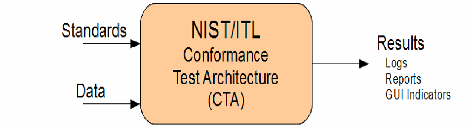
ブロック図です。「Standards」と「Data」の矢印が中央の「NIST/ITL Conformance Test Architecture (CTA)」の箱に入り、箱から「Results」（Logs、Reports、GUI Indicators）へ矢印が出ています。
Figure 2-1: NIST/ITL CTA
図 2-1: NIST/ITL CTA
2.2 High Level Architecture - GUI, Controller and CTS Modules
2.2 上位レベルのアーキテクチャ - GUI、コントローラー、CTS モジュール
As shown in Figure 2-2, the CTA architecture has three main components: the GUI, the Controller and the CTS Modules.
図 2-2 に示すように、CTA アーキテクチャには、GUI、コントローラー、CTS モジュールの 3 つの主要な構成要素があります。
The GUI is the component that interacts with the user to perform conformance testing. The Controller is the component between the GUI and the Testing Modules (CTSs) that accepts testing requests from the GUI, calls the specified modules with the required data, and returns the consolidated results from the Modules to the GUI. The Controller is more than a traffic cop between the GUI and the Modules. It performs high-level data testing such as: “Error: 512 bytes expected but only 100 passed.” It also ensures all Field sub-arrays are initialized so that Modules are freed from null testing.
GUI は、適合性試験を実行するために利用者とやり取りする構成要素です。コントローラーは、GUI と試験モジュール（CTS）の間にある構成要素であり、GUI からの試験要求を受け付け、必要なデータを付けて指定のモジュールを呼び出し、モジュールからの結果をまとめて GUI に返します。コントローラーは、GUI とモジュールの間で通信を振り分けるだけの存在ではありません。「エラー: 512 バイトが必要ですが、渡されたのは 100 バイトだけです」といった上位レベルのデータ試験も行います。また、すべての Field の部分配列が初期化されるようにして、モジュールが null の試験をしなくて済むようにします。
CTSs are the components that test implementations of a standard or specification for conformance to that standard or specification (e.g., ANSI INCITS 378-2009 - Information Technology - Finger Minutiae Format for Data Interchange). As stated above, the CTA currently supports CTS Modules designed to test implementations of biometric data interchange formats as well as Modules to test implementations of each component of a Biometric Information Record (i.e., Standard Biometric Header (SBH), Biometric Data Block (BDB), and Security Block (SB)).
CTS は、標準または仕様（例: ANSI INCITS 378-2009 - Information Technology - Finger Minutiae Format for Data Interchange）の実装が、その標準または仕様に適合しているかどうかを試験する構成要素です。前述のとおり、CTA は現在、生体データ交換フォーマットの実装を試験するように設計された CTS モジュールのほか、Biometric Information Record の各構成要素（すなわち Standard Biometric Header（SBH）、Biometric Data Block（BDB）、Security Block（SB））の実装を試験するモジュールをサポートしています。
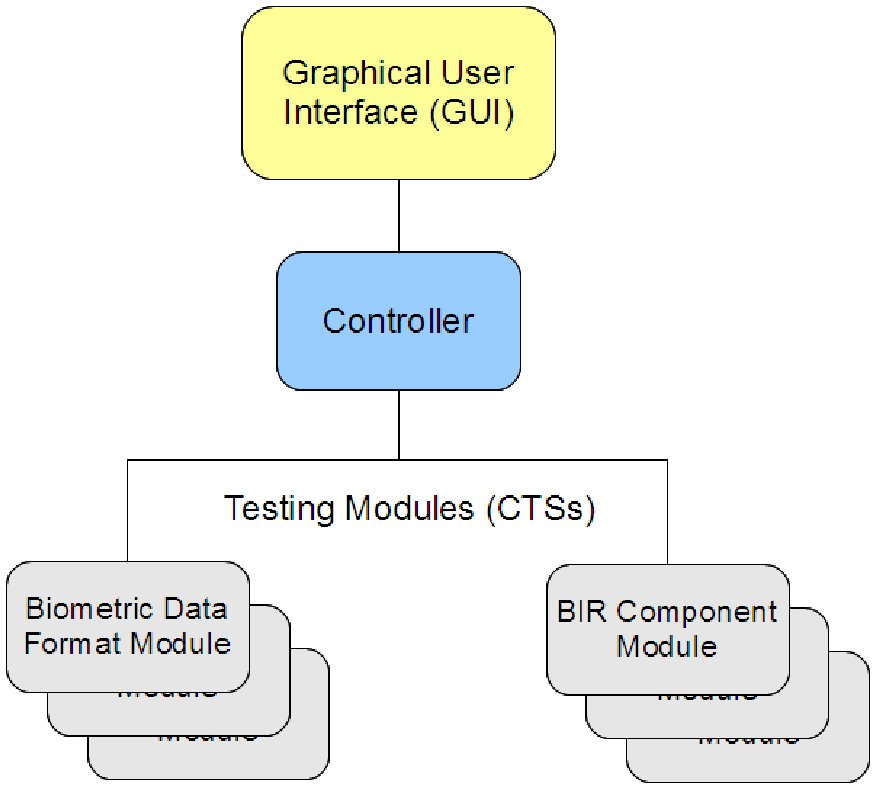
階層図です。最上部の「Graphical User Interface (GUI)」が「Controller」につながり、Controller が「Testing Modules (CTSs)」につながります。CTS は「Biometric Data Format Module」の箱の重なりと「BIR Component Module」の箱の重なりで表されています。
Figure 2-2: CTA High-Level Architecture
図 2-2: CTA の上位レベルのアーキテクチャ
The architecture design supports conformance testing performed against any single Module or any combination of Modules to test BIR components. As indicated by the Figure above there can be multiple biometric data interchange format Modules as well as BIR component Modules. The Controller discovers and loads the Modules at runtime using an “Add-in” or “Plug-in” architecture similar to many other programs. The primary benefits of the dynamically-loaded Module architecture are simplified development and distribution:
このアーキテクチャの設計は、BIR の構成要素を試験するために、任意の単一モジュールまたはモジュールの任意の組み合わせに対して実行する適合性試験をサポートします。上の図が示すように、生体データ交換フォーマット用のモジュールと BIR 構成要素用のモジュールを、それぞれ複数持てます。コントローラーは、他の多くのプログラムと同様の「アドイン」または「プラグイン」アーキテクチャを用いて、実行時にモジュールを検出してロードします。動的にロードされるモジュールのアーキテクチャの主な利点は、開発と配布が簡単になることです:
•Simplified Development: The Modules are developed separately from the GUI and Controller. Significantly, no changes need to be made to the GUI or Controller to create a new Module or modify an existing Module.
•開発の簡素化: モジュールは、GUI やコントローラーとは別に開発されます。重要な点として、新しいモジュールを作成したり既存のモジュールを変更したりするために、GUI やコントローラーを変更する必要はありません。
•Simplified Distribution: The GUI and Controller can be installed independently of any Modules, which means installing new or updated Modules can be as simple as copying the Module to a folder.
•配布の簡素化: GUI とコントローラーは、どのモジュールとも独立してインストールできます。つまり、新しいモジュールや更新されたモジュールのインストールは、モジュールをフォルダーにコピーするだけで済むほど簡単です。
The only requirement of a Module is that it be a .DLL that implements the IModule interface in the NIST_ITL.Modules namespace. The Modules are installed in the "Modules" subfolder.
モジュールに対する唯一の要件は、NIST_ITL.Modules 名前空間の IModule インタフェースを実装した .DLL であることです。モジュールは "Modules" サブフォルダーにインストールされます。
2.3 GUI / Controller Communication Methods
2.3 GUI とコントローラー間の通信方法
The GUI and the Controller support two interfaces known as the Local Controller and the Web Service Controller. CTS Modules can be used on a local computer or they can be accessed on the Internet or an Intranet via Web Services. Advantages and disadvantages of the Web Service architecture versus the operation via the local controller are discussed in section 4. The recently released CTA Beta 2.0 supports only the local controller. The Web Services controller is under testing.
GUI とコントローラーは、ローカルコントローラーと Web サービスコントローラーと呼ばれる 2 つのインタフェースをサポートします。CTS モジュールは、ローカルコンピュータ上で使うことも、Web サービス経由でインターネットまたはイントラネット上でアクセスすることもできます。Web サービスアーキテクチャとローカルコントローラー経由の運用との長所と短所は、第 4 節で論じます。最近公開された CTA Beta 2.0 がサポートするのはローカルコントローラーのみです。Web サービスコントローラーは試験中です。
2.4 CTA Beta 2.0 Key Features
2.4 CTA Beta 2.0 の主要な機能
As discussed above, the CTA is a set of individual components that work together to perform conformance testing. Each component can be independently developed and tested. Users benefit from this approach since it allows for faster upgrades. Key features incorporated in the design of the architecture are discussed below.
前述のとおり、CTA は、適合性試験を実行するために連携して動作する個々の構成要素の集合です。各構成要素は、独立して開発し、試験できます。この方法ではアップグレードがより速くなるため、利用者に利点があります。アーキテクチャの設計に組み込まれた主要な機能を、以下で論じます。
2.4.1 Dynamically-Loaded Modules
2.4.1 動的にロードされるモジュール
The testing Modules are automatically loaded at runtime; they do not have to be “compiled into” or “linked into” the rest of the software. They can be developed and deployed without changing any other CTA software. A CTA user can simply download and install a new or upgraded testing Module without changing any other CTA software component.
試験モジュールは実行時に自動的にロードされます。ソフトウェアの他の部分に「コンパイルして組み込む」ことも「リンクして組み込む」ことも必要ありません。他の CTA ソフトウェアを変更することなく、開発と展開ができます。CTA の利用者は、他の CTA ソフトウェア構成要素を変更することなく、新規または更新された試験モジュールをダウンロードしてインストールするだけで済みます。
2.4.2 Binary Data is in Context
2.4.2 コンテキスト内にあるバイナリデータ
When the CTA processes binary data, the first step is to place the data into an array of Field data structures. The primary benefit is that the users never have to interpret what the 27th (or 10,027th) byte is; the CTA shows which Field the byte belongs to. A Module’s complexity is greatly reduced by the pre-parsed array of Fields. Fields are one of the keys that enable “Unit Testing for Data Formats Testing.” Section 2.4.9 introduces the reader to a brief discussion on Unit Testing.
CTA がバイナリデータを処理するときの最初のステップは、データを Field データ構造の配列に格納することです。主な利点は、利用者が 27 番目（または 10,027 番目）のバイトが何であるかを解釈する必要が一切なくなることです。CTA は、そのバイトがどの Field に属するかを示します。事前に解析された Field の配列により、モジュールの複雑さは大幅に低減します。Field は、「データフォーマット試験のための単体試験」を可能にする鍵の一つです。第 2.4.9 節では、単体試験について簡単に論じます。
2.4.3 Fields Belong to Groups
2.4.3 グループに属するフィールド
The CTS Modules implement testing of groups of fields. Annex A- Structure Testing by Field Groups discusses this approach in detail and provides examples.
CTS モジュールは、フィールドのグループごとの試験を実装します。附属書 A - フィールドグループによる構造試験では、この方法を詳しく論じ、例を示します。
These are three typical rules for the Record Header group of fields:
Record Header のフィールドのグループに対する典型的な規則は、次の 3 つです。
•The Record Header must occur first.
•Record Header は最初に出現しなければなりません。
•The Record Header can occur only once.
•Record Header は 1 回だけ現れることができます。
•The Record Header consists of these fields, in this order:
•Record Header は、次のフィールドをこの順序で含みます。
•Format Identifier, Version, Record Length, ...
•Format Identifier、Version、Record Length、...
Processing of fields by groups enhances CTS Module confidence and reliability by reducing software complexity. These are the primary reasons:
フィールドをグループごとに処理すると、ソフトウェアの複雑さが減り、CTS モジュールに対する確信度と信頼性が高まります。主な理由は次のとおりです:
•The CTS Modules call the same software library for group processing. The library has been thoroughly tested. No CTS Module has to create its own software for processing fields by groups.
•CTS モジュールは、グループ処理に同じソフトウェアライブラリを呼び出します。このライブラリは徹底的に試験されています。フィールドをグループごとに処理するためのソフトウェアを、各 CTS モジュールが独自に作成する必要はありません。
•Groups are defined in XML, not by hard-coded values typed by hand into a CTS Module. The XML format is far superior to hard-coded values for editing, proofreading, and transformation of the group information into other useful forms.
•グループは XML で定義され、CTS モジュールに手作業で入力したハードコードの値では定義されません。グループ情報の編集、校正、他の有用な形式への変換には、ハードコードの値よりも XML 形式のほうがはるかに優れています。
•The part of the CTS Module that determines if the set of groups forms a valid data structure is very small and clear.
•グループの集合が有効なデータ構造を形成しているかどうかを判定する CTS モジュールの部分は、非常に小さく、明快です。
•Once the structure has been determined valid, many level 2 assertions2 become trivial to write and test.
•いったん構造が有効であると判定されれば、多くのレベル 2 アサーション2は、記述も試験も容易になります。
Additional information on this approach is discussed in Annex A.
この方法に関する追加情報は、附属書 A で論じます。
2.4.4 Additional Data
2.4.4 追加データ
The CTA supports optional auxiliary binary information called "Auxiliary Data". The purpose of Additional Data is to allow a field to pass that would normally fail under certain conditions. For example, some Modules are designed to test the content of the CBEFF Product Identifier field. Some standards state that CBEFF Product Identifier codes can be registered with the International Biometric Industry Association (IBIA) at www.ibia.org. The CTA Modules are released with a version of the codes from IBIA. During testing, if the CBEFF Product Identifier field has a code that is not on the list, the test fails. However, if the value matches exactly the value in Additional Data, the test passes. This allows tests to pass where the CBEFF Product Identifier code has not yet been registered, was registered after the release of the Module, or is strictly used for internal purposes and will not be registered. Additional Data is specified at the GUI level but acted upon at the Module level. The Module developer implements and documents the exact meaning of Additional Data for each field in which it is used. In existing Modules Additional Data is ignored for most fields and does not affect the processing at all.
CTA は、"Auxiliary Data" と呼ばれる、任意の補助的なバイナリ情報をサポートします。Additional Data の目的は、特定の条件では通常は不合格になるフィールドを合格させられるようにすることです。たとえば、一部のモジュールは、CBEFF Product Identifier フィールドの内容を試験するように設計されています。一部の標準は、CBEFF Product Identifier コードを International Biometric Industry Association（IBIA）（www.ibia.org）に登録できると定めています。CTA モジュールは、IBIA のコードのあるバージョンとともに公開されます。試験中に、CBEFF Product Identifier フィールドにこの一覧にないコードがあると、試験は不合格になります。しかし、その値が Additional Data の値と完全に一致する場合は、試験に合格します。これにより、CBEFF Product Identifier コードがまだ登録されていない場合、モジュールの公開後に登録された場合、または内部目的でのみ使われ登録されない場合でも、試験に合格できます。Additional Data は GUI レベルで指定されますが、モジュールレベルで処理されます。モジュール開発者は、Additional Data を使用する各フィールドについて、その正確な意味を実装し、文書化します。既存のモジュールでは、Additional Data はほとんどのフィールドで無視され、処理にまったく影響しません。
2.4.5 XML Manifests
2.4.5 XML マニフェスト
A Manifest defines the format to which a binary file conforms. It is saved in XML format. In testing, any number of binary files can be tested against a specific Manifest. When the format of a binary implementation of a standard is known in detail, the user provides the CTS that will be used to test the binary file(s) with information on the format via a Manifest. The CTA accepts Manifests in XML and provides the means for developing them. The Fields with all their information (Bytes, Lengths, Comments, etc.) can be saved in a Manifest. In addition to the Fields, the Manifest has additional information such as the Manifest’s Name, a Description, the Module(s) used, etc. The Manifests can be easily shared and displayed. Since a Manifest defines a format, binary data is more easily analyzed and understood. Table 2-1 depicts binary data displayed in a hex editor.
Manifest は、バイナリファイルが適合するフォーマットを定義します。Manifest は XML 形式で保存されます。試験では、任意の数のバイナリファイルを、特定の Manifest に対して試験できます。標準のバイナリ実装のフォーマットが詳細にわかっている場合、利用者は、バイナリファイルを試験するために使う CTS に、そのフォーマットに関する情報を Manifest を通じて提供します。CTA は XML 形式の Manifest を受け付け、その作成手段を提供します。すべての情報（バイト、長さ、コメントなど）を含む Field は、Manifest に保存できます。Manifest には、Field のほかに、Manifest の名前、説明、使用したモジュールなどの追加情報があります。Manifest は容易に共有、表示できます。Manifest はフォーマットを定義するため、バイナリデータはより容易に分析し、理解できます。表 2-1 は、16 進エディターで表示したバイナリデータを示しています。
Table 2-1: Binary data displayed in a hex editor
表 2-1: 16 進エディターで表示したバイナリデータ
![Screenshot of a hex editor showing the sample record bytes, with columns Address, 0–f and Dump. Rows: 00000000: 46 4d 52 00 20 32 30 00 01 4c 00 42 00 11 00 b5; 00000010: 02 00 02 00 00 c5 00 c5 02 00 07 00 5a 1b 40 64; 00000020: 00 0e 50 5a 40 a4 00 11 3c 50 80 37 00 12 10 5a; 00000030: 80 4a 00 16 36 3c 40 70 00 16 40 50 80 2a 00 1f; 00000040: 1f 5a 80 93 00 23 24 5a 40 58 00 26 75 28 80 2b; 00000050: 00 2a 03 50 40 38 00 30 17 46 40 84 00 31 33 5a; 00000060: 80 47 00 32 2f 50 00 5f 00 33 3a 5a 40 70 00 35; 00000070: 5e 32 80 87 00 3a 17 50 00 29 00 3c 2a 46 80 43; 00000080: 00 3e 67 5a 40 5b 00 3f 5e 50 40 70 00 41 17 3c; 00000090: 40 35 00 47 20 5a 80 68 00 4a 09 50 40 4b 00 4f; 000000a0: 0f 5a 80 30 00 50 41 5a 40 82 00 59 20 50 80 3f; 000000b0: 00 5f 5a 50 40 2f 00 6c 75 5a 80 7e 00 73 7a 1e; 000000c0: 00 00 02 00 46 16 40 28 00 5d 00 5a 80 74 00 64; 000000d0: 00 50 40 52 00 5f 09 46 80 8c 00 71 0b 46 40 7a; 000000e0: 00 87 0d 50 80 37 00 48 0f 32 40 5e 00 4a 11 3c; 000000f0: 40 9b 00 3e 1e 50 80 2a 00 40 27 46 40 9b 00 55. The Dump column shows the same bytes as characters (the first row begins "FMR. 20"); a further row is cut off at the bottom.](assets/ir-7771/p0016-figure-01.png)
16 進エディターの画面で、サンプルのレコードのバイト列を Address、0–f、Dump の列で表示しています。行: 00000000: 46 4d 52 00 20 32 30 00 01 4c 00 42 00 11 00 b5; 00000010: 02 00 02 00 00 c5 00 c5 02 00 07 00 5a 1b 40 64; 00000020: 00 0e 50 5a 40 a4 00 11 3c 50 80 37 00 12 10 5a; 00000030: 80 4a 00 16 36 3c 40 70 00 16 40 50 80 2a 00 1f; 00000040: 1f 5a 80 93 00 23 24 5a 40 58 00 26 75 28 80 2b; 00000050: 00 2a 03 50 40 38 00 30 17 46 40 84 00 31 33 5a; 00000060: 80 47 00 32 2f 50 00 5f 00 33 3a 5a 40 70 00 35; 00000070: 5e 32 80 87 00 3a 17 50 00 29 00 3c 2a 46 80 43; 00000080: 00 3e 67 5a 40 5b 00 3f 5e 50 40 70 00 41 17 3c; 00000090: 40 35 00 47 20 5a 80 68 00 4a 09 50 40 4b 00 4f; 000000a0: 0f 5a 80 30 00 50 41 5a 40 82 00 59 20 50 80 3f; 000000b0: 00 5f 5a 50 40 2f 00 6c 75 5a 80 7e 00 73 7a 1e; 000000c0: 00 00 02 00 46 16 40 28 00 5d 00 5a 80 74 00 64; 000000d0: 00 50 40 52 00 5f 09 46 80 8c 00 71 0b 46 40 7a; 000000e0: 00 87 0d 50 80 37 00 48 0f 32 40 5e 00 4a 11 3c; 000000f0: 40 9b 00 3e 1e 50 80 2a 00 40 27 46 40 9b 00 55。Dump 列は同じバイトを文字として表示しています（先頭行は "FMR. 20" で始まります）。さらに 1 行が画面下部で途中まで表示されています。
Table 2-2 shows a screenshot of the same data, saved in a Manifest and displayed in Altova’s XMLSpy®. The binary data, shown in the last column, is associated with a Field Name, shown in the “= Name” column.
表 2-2 は、同じデータを Manifest に保存し、Altova の XMLSpy® で表示した画面のスクリーンショットです。最後の列に示されたバイナリデータは、「= Name」列に示された Field Name に関連付けられています。
Table 2-2: Binary data displayed in Altova’s XMLSpy®
表 2-2: Altova の XMLSpy® で表示したバイナリデータ
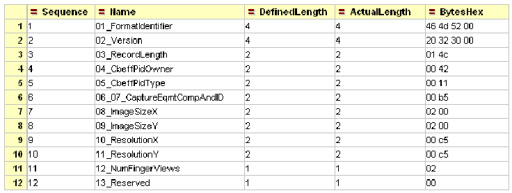
Sequence、Name、DefinedLength、ActualLength、BytesHex の列を持つ表の画面です。行: 1, 01_FormatIdentifier, 4, 4, 46 4d 52 00; 2, 02_Version, 4, 4, 20 32 30 00; 3, 03_RecordLength, 2, 2, 01 4c; 4, 04_CbeffPidOwner, 2, 2, 00 42; 5, 05_CbeffPidType, 2, 2, 00 11; 6, 06_07_CaptureEqmtCompAndID, 2, 2, 00 b5; 7, 08_ImageSizeX, 2, 2, 02 00; 8, 09_ImageSizeY, 2, 2, 02 00; 9, 10_ResolutionX, 2, 2, 00 c5; 10, 11_ResolutionY, 2, 2, 00 c5; 11, 12_NumFingerViews, 1, 1, 02; 12, 13_Reserved, 1, 1, 00。
Table 2-3 shows additional data shown in the XMLSpy® screenshot, this additional information included in the Manifest is useful too. Note that the exact versions of the Modules that created the Manifest are saved in the Manifest.
表 2-3 は、XMLSpy® のスクリーンショットに表示された追加データを示しています。Manifest に含まれるこの追加情報も有用です。Manifest を作成したモジュールの正確なバージョンが Manifest に保存されることに注意してください。
Table 2-3: Additional data included in the Manifest
表 2-3: マニフェストに含まれる追加データ
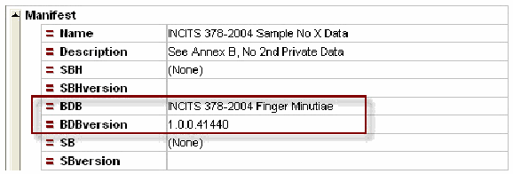
「Manifest」要素の名前と値の画面です。Name は INCITS 378-2004 Sample No X Data、Description は See Annex B, No 2nd Private Data、SBH は (None)、SBHversion は空、BDB は INCITS 378-2004 Finger Minutiae、BDBversion は 1.0.0.41440、SB は (None)、SBversion は空です。BDB と BDBversion の行が赤い枠で囲まれています。
2.4.6 Decode
2.4.6 デコード
When the structure of a binary implementation of a standard is not known, a Manifest to describe the binary input to the CTS cannot be developed. In this case, Manifest-Based testing cannot be performed. The CTS develops the related Manifest based on decoding the input binary file. This is called Decode-Based binary testing. The structure of the data is determined as the input bytes are processed; there is no external template, schema or Manifest that describes the structure.
標準のバイナリ実装の構造がわからない場合、CTS へのバイナリ入力を記述する Manifest は作成できません。この場合、Manifest ベースの試験は実行できません。CTS は、入力バイナリファイルをデコードした結果に基づいて、関連する Manifest を作成します。これはデコードベースのバイナリ試験と呼ばれます。データの構造は、入力バイトの処理中に決定されます。構造を記述する外部のテンプレート、スキーマ、Manifest は存在しません。
2.4.7 Test Cases
2.4.7 テストケース
A CTA Test Case encapsulates both the data for and the expected results of a testing operation. When saved the Test Case is stored in XML format. A Test Case can test, for example, “This list of 10 fields should have these 4 specific errors.” When the Test Case is tested, if 4 errors are found, and they exactly match the 4 expected errors, the GUI indicates the Test Case succeeded.
CTA の Test Case は、試験操作のデータと期待される結果の両方をカプセル化します。保存すると、Test Case は XML 形式で格納されます。Test Case では、たとえば「この 10 個のフィールドの一覧では、これら 4 つの特定のエラーが検出されるはずだ」という試験ができます。Test Case を試験したときに 4 つのエラーが見つかり、それらが期待される 4 つのエラーと完全に一致すれば、GUI は Test Case が成功したことを示します。
“I am expecting to find these 4 errors. These same 4 errors were found during testing. Since I found what I was looking for, proof that the Module finds the errors it should, the Test Case passes.”
「これら 4 つのエラーが見つかると期待しています。試験中に、これと同じ 4 つのエラーが見つかりました。探していたもの、すなわちモジュールが見つけるべきエラーを見つけることを証明するものが見つかったので、Test Case は合格です。」
Well designed Test Cases are a critical tool to test the reliability of a CTS. They are primarily used by CTS Module developers. A CTA/CTS user may never need to use a Test Case. Test Cases are very similar to Manifests; the chief difference between them is their purpose. Generally speaking, CTA/CTS users use Manifests to perform data testing, whereas CTS Module developers use Test Cases to ensure the correct operation of their Modules. Manifests and Test Cases contain the format specification of binary data in a convenient form for storage, sharing and analysis. For testing, their data is converted by the GUI into the array of Fields and supporting information that is passed to the Controller. When testing is complete the results are stored in the Manifest or Test Case. Depending on the specific GUI operation, the updated Manifest or Test Case can optionally be saved.
適切に設計された Test Case は、CTS の信頼性を試験するための重要なツールです。主に CTS モジュールの開発者が使用します。CTA/CTS の利用者は、Test Case を使う必要がない場合もあります。Test Case は Manifest とよく似ており、両者の主な違いは目的です。一般に、CTA/CTS の利用者はデータの試験を行うために Manifest を使い、CTS モジュールの開発者は自分のモジュールが正しく動作することを確認するために Test Case を使います。Manifest と Test Case には、バイナリデータのフォーマット仕様が、保存、共有、分析に便利な形で含まれています。試験のために、これらのデータは GUI によって、コントローラーに渡される Field の配列と補助情報に変換されます。試験が完了すると、結果は Manifest または Test Case に格納されます。特定の GUI 操作に応じて、更新された Manifest または Test Case を任意で保存できます。
To reduce CTS software complexity, Manifests and Test Cases have an identical format. In fact, a Manifest is just a “Complete” Test Case that expects to “Pass.” For the convenience of CTA/CTS users, the GUI defaults to working with Manifests and Test Cases are different at the GUI and documentation level, but they have the same XML structure. A more detailed discussion on Test Cases can be found in Annex B.
CTS ソフトウェアの複雑さを減らすため、Manifest と Test Case は同一の形式を持ちます。実際、Manifest は「Pass」を期待する「Complete」な Test Case にすぎません。CTA/CTS の利用者の便宜のため、GUI は既定で Manifest を扱います。GUI と文書では Manifest と Test Case を別のものとして扱いますが、両者の XML 構造は同じです。Test Case に関するより詳細な説明は、附属書 B にあります。
2.4.8 Multiple Errors
2.4.8 複数のエラー
To minimize users’ time and work in correcting problems, the CTA supports Modules returning multiple errors from a single test.
問題の修正にかかる利用者の時間と労力を最小限にするため、CTA は、モジュールが 1 回の試験から複数のエラーを返すことをサポートします。
2.4.9 Approaches to Increase Confidence and Reliability
2.4.9 信頼と信頼性を高める方法
To trust a software program, it is not enough to know that the software returns good results when presented with good data. The Module developer and the user also need to know that the software behaves as expected when it is presented with erroneous data. Perhaps the single greatest improvement in software reliability in the past 30 years has come from the use of Unit Testing. These tests verify the correct operation of the product under both good and bad conditions. When a bug is discovered it is common practice to first write a unit test that duplicates the error, then fix the error, and then add the updated unit test to the product’s suite of tests to ensure the bug never occurs again. By using both good software development methods and the Beta 2.0 CTA’s Test Case capability, the software developers have a great deal of confidence that the Modules they create will respond appropriately to both good and bad data. The Beta 2.0 CTA brings Unit Testing to data formats testing.
ソフトウェアプログラムを信頼するには、正しいデータを与えたときに良い結果を返すことを知っているだけでは十分ではありません。モジュール開発者と利用者は、誤ったデータを与えたときにもソフトウェアが期待どおりに動作することも知っている必要があります。過去 30 年間で、ソフトウェアの信頼性を最も大きく向上させた要因は、おそらく単体テストの利用でしょう。これらのテストは、良好な条件と不良な条件の両方で製品が正しく動作することを検証します。バグが見つかったときは、まずそのエラーを再現する単体テストを書き、次にエラーを修正し、その後で更新した単体テストを製品のテストスイートに追加して、そのバグが二度と起こらないようにするのが一般的な慣行です。優れたソフトウェア開発手法と Beta 2.0 CTA の Test Case 機能の両方を使うことで、ソフトウェア開発者は、自分たちが作成するモジュールが正しいデータにも誤ったデータにも適切に応答するという大きな確信を得られます。Beta 2.0 CTA は、データフォーマットの試験に単体テストを取り入れます。
3 Introduction to Testing Binary Data
3 バイナリデータの試験の紹介
As stated in section 2, testing binary data can be performed using a Manifest that describes the format of the binary data or by decoding the binary data.
第 2 節で述べたとおり、バイナリデータの試験は、バイナリデータのフォーマットを記述する Manifest を使って行うことも、バイナリデータをデコードして行うこともできます。
3.1 Testing Binary Data – Manifest-Based
3.1 バイナリデータの試験 – マニフェストベース
In this common GUI operation a user elects to test one or more binary files with one Manifest. The online help tool or the Users' Guide that can be downloaded from the NIST/ITL CTA Beta 2.0 release web page [8] provides detailed information on how to perform binary testing. The process within the GUI is as follows:
この一般的な GUI 操作では、利用者は 1 つ以上のバイナリファイルを 1 つの Manifest で試験することを選びます。バイナリ試験の実行方法の詳細は、オンラインヘルプツール、または NIST/ITL CTA Beta 2.0 のリリース Web ページ [8] からダウンロードできる Users' Guide に記載されています。GUI 内のプロセスは次のとおりです。
1.The Manifest is loaded in memory.
1.Manifest がメモリにロードされます。
2.The binary file is loaded into the Manifest as illustrated in section 3.3.
2.第 3.3 節に示すように、バイナリファイルが Manifest にロードされます。
3.The Manifest is passed to the Controller for Testing. See the High Level Sequence Diagrams in Annex C.
3.Manifest が試験のためにコントローラーに渡されます。附属書 C の上位レベルのシーケンス図を参照してください。
4.When the results are received back from the Controller, the GUI is updated. If selected by the user, the results are added to the Log and/or Report.
4.結果がコントローラーから返されると、GUI が更新されます。利用者が選択した場合は、結果がログまたはレポート、あるいはその両方に追加されます。
5.If there are more binary files, the process continues with step 2. If there are no more binary files the operation is complete.
5.バイナリファイルがまだある場合は、ステップ 2 から処理を続けます。バイナリファイルがなければ、操作は完了です。
3.2 Testing Binary Data - Decode-Based
3.2 バイナリデータの試験 - デコードベース
This common GUI operation is very similar to the Manifest-Based Binary Data Testing process discussed above. The difference is that each binary file creates its own Manifest. These are the steps:
この一般的な GUI 操作は、前述の Manifest ベースのバイナリデータ試験プロセスとよく似ています。違いは、各バイナリファイルがそれぞれ独自の Manifest を作成する点です。手順は次のとおりです。
1.The binary file is loaded into memory and passed to the Controller for Decoding. See the High Level Sequence diagrams in Annex C.
1.バイナリファイルがメモリにロードされ、デコードのためにコントローラーに渡されます。附属書 C の上位レベルのシーケンス図を参照してください。
2.The Controller returns the array of Field data structures created by the CTS Module "Decode" operation.
2.コントローラーは、CTS モジュールの "Decode" 操作によって作成された Field データ構造の配列を返します。
3.The array of fields is passed back to the Controller for Testing.
3.フィールドの配列が、試験のためにコントローラーに戻されます。
4.When the test results are received back from the Controller the GUI is updated. If selected by the user, the results are added to the Log and/or Report.
4.試験結果がコントローラーから返されると、GUI が更新されます。利用者が選択した場合は、結果がログまたはレポート、あるいはその両方に追加されます。
5.If there are more binary files, the process continues with step 1. If there are no more binary files, the operation is complete.
5.バイナリファイルがまだある場合は、ステップ 1 から処理を続けます。バイナリファイルがなければ、操作は完了です。
3.3 Loading Binary Data into a Manifest
3.3 マニフェストへのバイナリデータのロード
Loading binary data into a Manifest happens frequently in GUI operations. These are the steps:
バイナリデータを Manifest にロードすることは、GUI 操作で頻繁に行われます。手順は次のとおりです。
1.The Manifest is loaded into memory. For simplicity, the sample Manifest shown in Table 3-1 below has three fields and a total of six expected bytes. The Manifest initially looks like this.
1.Manifest がメモリにロードされます。わかりやすくするため、以下の表 3-1 に示すサンプル Manifest は、3 つのフィールドと合計 6 バイトの想定長を持ちます。Manifest は最初は次のようになっています。
Table 3-1: Initial Content of the Sample Manifest
表 3-1: サンプルマニフェストの初期内容
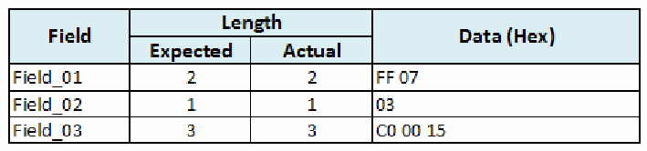
Field、Length（Expected、Actual）、Data (Hex) の列を持つ表です。Field_01 は期待 2・実際 2・データ FF 07、Field_02 は期待 1・実際 1・データ 03、Field_03 は期待 3・実際 3・データ C0 00 15です。
2.Next, the Manifest’s data is erased. The cells highlighted in Table 3-2 (Actual Length) indicate length errors that would be identified by Testing.
2.次に、Manifest のデータが消去されます。表 3-2 で強調表示されたセル（Actual Length）は、試験で特定される長さのエラーを示します。
Table 3-2: Sample Manifest Showing Data Erased
表 3-2: データを消去したサンプルマニフェスト
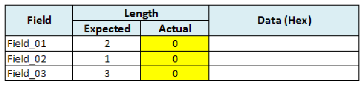
Field、Length（Expected、Actual）、Data (Hex) の列を持つ表です。Field_01 は期待 2・実際 0・データ 空、Field_02 は期待 1・実際 0・データ 空、Field_03 は期待 3・実際 0・データ 空です。3 つの Actual の値（0）が黄色で強調されています。
3.Next, as shown in Table 3-3, the input binary data is applied to the memory Manifest, filling each field completely with bytes before going to the next field. If there are too few bytes, one or more fields are not filled to capacity.
3.次に、表 3-3 に示すように、入力バイナリデータがメモリ上の Manifest に適用され、次のフィールドに進む前に、各フィールドがバイトで完全に満たされます。バイト数が足りない場合は、1 つ以上のフィールドが容量いっぱいまで満たされません。
Table 3-3: Input Binary Data Applied to the Sample Manifest
表 3-3: サンプルマニフェストに適用した入力バイナリデータ
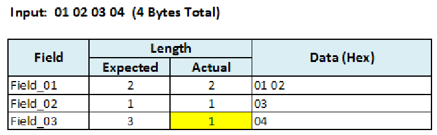
表の上に「Input: 01 02 03 04 (4 Bytes Total)」とあります。Field、Length（Expected、Actual）、Data (Hex) の列を持つ表です。Field_01 は期待 2・実際 2・データ 01 02、Field_02 は期待 1・実際 1・データ 03、Field_03 は期待 3・実際 1・データ 04です。Field_03 の Actual の値（1）が黄色で強調されています。
As shown in Table 3-4, if the binary input is longer than expected, the excess data is in the last field and the actual field length is highlighted in yellow.
表 3-4 に示すように、バイナリ入力が想定より長い場合、余分なデータは最後のフィールドに入り、実際のフィールド長が黄色で強調表示されます。
Table 3-4: Input Binary Data Longer Than Expected
表 3-4: 想定より長い入力バイナリデータ
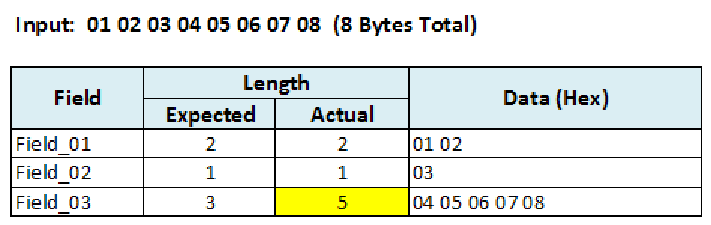
表の上に「Input: 01 02 03 04 05 06 07 08 (8 Bytes Total)」とあります。Field、Length（Expected、Actual）、Data (Hex) の列を持つ表です。Field_01 は期待 2・実際 2・データ 01 02、Field_02 は期待 1・実際 1・データ 03、Field_03 は期待 3・実際 5・データ 04 05 06 07 08です。Field_03 の Actual の値（5）が黄色で強調されています。
When the length of the binary input data exactly matches the Manifest’s total expected length, each field has the expected number of bytes as shown in Table 3-5 below.
入力バイナリデータの長さが Manifest の想定総長とちょうど一致する場合は、以下の表 3-5 に示すように、各フィールドが想定どおりのバイト数を持ちます。
Table 3-5: Input Binary Data Length Matches the Manifest’s Total expected Length
表 3-5: 入力バイナリデータの長さがマニフェストの想定総長と一致する場合
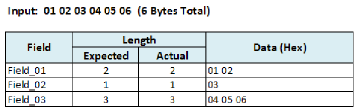
表の上に「Input: 01 02 03 04 05 06 (6 Bytes Total)」とあります。Field、Length（Expected、Actual）、Data (Hex) の列を持つ表です。Field_01 は期待 2・実際 2・データ 01 02、Field_02 は期待 1・実際 1・データ 03、Field_03 は期待 3・実際 3・データ 04 05 06です。
The memory-Manifest is loaded with new binary data, ready for the next part of the GUI operation.
メモリ上の Manifest に新しいバイナリデータがロードされ、GUI 操作の次の部分に進む準備が整います。
3.4 Field-Based vs. Binary-Input-Only Testing
3.4 フィールドベースの試験とバイナリ入力のみの試験の比較
The Fields data structure and its persistence as an XML Manifest bring a high level of understanding and documentation to binary data. This organization of binary data means the CTA operates somewhat differently from a binary-data-only testing approach where data input is just an array of bytes.
Field データ構造と、XML Manifest としてのその永続化により、バイナリデータに対する高いレベルの理解と文書化がもたらされます。このようにバイナリデータを構成するため、CTA は、データ入力が単なるバイト配列であるバイナリデータのみの試験方式とは、やや異なる動作をします。
3.4.1 Separate “Decode” Operation
3.4.1 独立した「デコード」操作
In binary-input-only testing, the structure of the data is determined as the input bytes are processed; there is no external template, schema or Manifest that describes the structure. In the CTA, with its Fields data structure architecture, determining the structure is called Decoding and it is a separate operation from Testing. (Decoding is discussed in section 2.4.6.) Most of the time when Decode is called in user testing, it is immediately followed by a Testing call.
バイナリ入力のみの試験では、データの構造は入力バイトの処理中に決定されます。構造を記述する外部のテンプレート、スキーマ、Manifest は存在しません。CTA では、Field データ構造のアーキテクチャにより、構造の決定はデコードと呼ばれ、試験とは別の操作です。（デコードは第 2.4.6 節で論じています。）利用者の試験で Decode が呼び出されるときは、ほとんどの場合、その直後に試験の呼び出しが続きます。
3.4.2 Field-Length Testing
3.4.2 フィールド長の試験
During binary-input-only testing, if the first field is two bytes long, the first two bytes of the input are the first field’s data. There is no other interpretation.
バイナリ入力のみの試験では、最初のフィールドが 2 バイト長であれば、入力の最初の 2 バイトが最初のフィールドのデータになります。ほかの解釈はありません。
In Field-Based testing, the first field is a Field data structure. It has Length and Data components. In the CTA, each Field’s Length is verified. There is no analogous concept in binary-input-only testing. This is not as inconvenient as it may sound because of the intelligence built into the GUI. For example, users cannot change the length of a fixed-length field.
Field ベースの試験では、最初のフィールドは Field データ構造です。これには Length と Data の構成要素があります。CTA では、各 Field の Length が検証されます。バイナリ入力のみの試験には、これに相当する概念はありません。GUI に組み込まれた機能のおかげで、これは聞こえるほど不便ではありません。たとえば、利用者は固定長フィールドの長さを変更できません。
4 Characteristics of NIST/ITL CSD CTA Local and Web Services Controllers
4 NIST/ITL CSD CTA のローカルコントローラーと Web サービスコントローラーの特性
4.1 Local Controller
4.1 ローカルコントローラー
Figure 4-1 depicts a graph of the Local Controller interface. In this configuration the GUI, Controller and Modules are all on the same computer and communicate in the simplest, fastest method.
図 4-1 は、ローカルコントローラーインタフェースの図を示しています。この構成では、GUI、コントローラー、モジュールがすべて同じコンピュータ上にあり、最も単純で最も高速な方法で通信します。
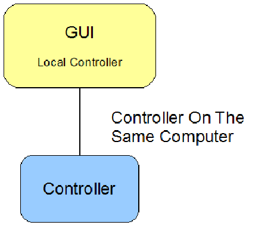
図です。「GUI – Local Controller」の箱と「Controller」の箱が線で結ばれ、線に「Controller On The Same Computer」と書かれています。
Figure 4-1: CTA’s Local Controller
図 4-1: CTA のローカルコントローラー
4.2 Web Services Controller
4.2 Web サービスコントローラー
The recently released CTA Beta 2.0 supports only the local controller. The Web Services controller is under testing. Figure 4-2 shows the Web Services Controller configuration. In this configuration, the GUI and Controller use the Simple Object Access Protocol (SOAP) standard to exchange data. This has more overhead than Local Controller communication, but little difference in speed was noted during initial testing when the Web Services Controller was installed on the same PC as the GUI.
最近公開された CTA Beta 2.0 がサポートするのはローカルコントローラーのみです。Web サービスコントローラーは試験中です。図 4-2 は、Web サービスコントローラーの構成を示しています。この構成では、GUI とコントローラーは、Simple Object Access Protocol（SOAP）標準を使ってデータを交換します。これはローカルコントローラーの通信よりもオーバーヘッドが大きくなりますが、Web サービスコントローラーを GUI と同じ PC にインストールして行った初期の試験では、速度にほとんど差は見られませんでした。
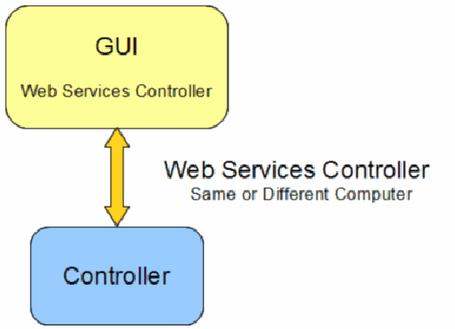
図。「GUI – Web Services Controller」の箱と「Controller」の箱が双方向の矢印で結ばれ、矢印に「Web Services Controller – Same or Different Computer」と書かれています。
Figure 4-2: CTA’s Web Services Controller
図 4-2: CTA の Web サービスコントローラー
Not all operating systems support self-hosting of web services. For example, a Web Services Controller can be installed and run on Microsoft® Windows XP Professional, but not on Microsoft® Windows XP Home.
すべてのオペレーティングシステムが Web サービスのセルフホスティングをサポートしているわけではありません。たとえば、Web サービスコントローラーは Microsoft® Windows XP Professional にはインストールして実行できますが、Microsoft® Windows XP Home ではできません。
4.3 Local and Web Services Controllers
4.3 ローカルコントローラーと Web サービスコントローラー
As shown in Figure 4-3, the GUI can be configured to support both communication methods, but only one can be active at a time.
図 4-3 に示すように、GUI は両方の通信方法をサポートするように構成できますが、同時に有効にできるのは一方だけです。
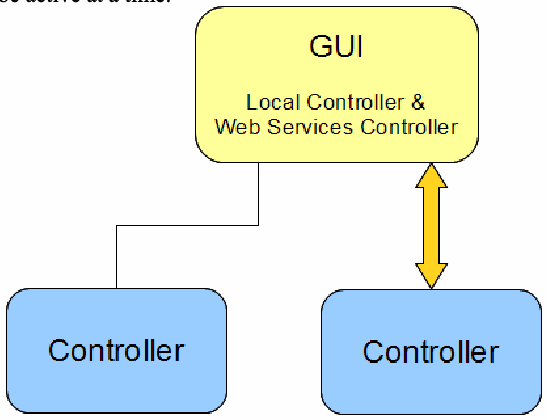
図。「GUI – Local Controller & Web Services Controller」の箱が、一方の「Controller」の箱と線で、もう一方の「Controller」の箱と双方向の矢印で結ばれています。
Figure 4-3: CTA’s Local and Web Services Controller Configuration
図 4-3: CTA のローカルコントローラーと Web サービスコントローラーの構成
4.4 Multiple Web Services Controllers
4.4 複数の Web サービスコントローラー
Finally, since Web Services are specified by a Uniform Resource Identifier (URI), similar to a URL, the GUI that supports the Web Services Controller can connect to many different Web Services Controllers, one at a time.
最後に、Web サービスは URL に似た Uniform Resource Identifier（URI）で指定されるため、Web サービスコントローラーをサポートする GUI は、さまざまな Web サービスコントローラーに、一度に 1 つずつ接続できます。
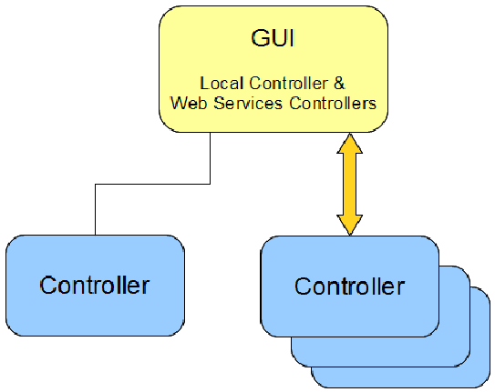
図。「GUI – Local Controller & Web Services Controllers」の箱が、一方の「Controller」の箱と線で、重なった複数の「Controller」の箱と双方向の矢印で結ばれています。
Figure 4-4: CTA’s Local and Web Services Controller Configuration
図 4-4: CTA のローカルコントローラーと Web サービスコントローラーの構成
4.5 Advantages and Disadvantages of the Web Services Architecture
4.5 Web サービスアーキテクチャの長所と短所
4.5.1 Advantages:
4.5.1 長所:
There are three key advantages to implementing and using a Web Services architecture instead of using a local controller:
ローカルコントローラーを使う代わりに Web サービスアーキテクチャを実装して使うことには、3 つの主要な長所があります。
•Simple PC Configuration and Maintenance: Only the GUI needs to be installed on a user’s PC. An organization can be responsible for maintaining the server(s) which have the Controller and Modules. In this architecture, upgrading every user to a new version of a specific Module is just a matter of updating the server, not each individual PC.
•PC の構成と保守の簡素化: 利用者の PC にインストールする必要があるのは GUI だけです。組織は、コントローラーとモジュールを備えたサーバーの保守を担当できます。このアーキテクチャでは、利用者全員が使う特定のモジュールを新しいバージョンにアップグレードするには、各 PC ではなくサーバーを更新するだけで済みます。
•Testing Flexibility: Since the GUI can connect with many different Web Services Controllers, specific Web Services Controllers can be established for different purposes. For example, Module developers may establish several Web Services Controllers that demonstrate the capabilities of their Module at various points in its development.
•試験の柔軟性: GUI はさまざまな Web サービスコントローラーに接続できるため、目的に応じて特定の Web サービスコントローラーを設けられます。たとえば、モジュール開発者は、開発のさまざまな時点におけるモジュールの能力を示す複数の Web サービスコントローラーを設けることができます。
•Enhanced Intellectual Property (IP) Protection: If an organization develops a Module that contains IP, they may not wish to release the Module for installation on PCs, as there is little or no protection against a sufficiently-motivated individual disassembling their Module. If they make the Module available only from a Web Services Controller installed on their own secure server(s), the IP is much better protected.
•知的財産（IP）保護の強化: 組織が IP を含むモジュールを開発した場合、十分な動機を持つ個人がモジュールを逆アセンブルすることに対する保護がほとんどないか、まったくないため、そのモジュールを PC にインストールできる形で公開したくない場合があります。モジュールを、自組織の安全なサーバーにインストールした Web サービスコントローラーからのみ利用できるようにすれば、IP ははるかによく保護されます。
4.5.2 Disadvantages
4.5.2 短所
•Connectivity: If the Web Services Controller is located on a separate machine from the GUI, a network connection is required between the GUI computer and the Web Services Controller computer.
•接続性: Web サービスコントローラーが GUI とは別のマシンにある場合、GUI のコンピュータと Web サービスコントローラーのコンピュータの間にネットワーク接続が必要です。
•Potentially Slower Testing: In NIST/ITL CSD's initial testing there was a negligible speed difference between the Local Controller configuration and the Web Services Controller configuration when the Web Service Controller was installed on the same computer as the GUI. Network conditions and Internet speed will be factors in execution speed.
•試験が遅くなる可能性: NIST/ITL CSD の初期の試験では、Web サービスコントローラーを GUI と同じコンピュータにインストールした場合、ローカルコントローラーの構成と Web サービスコントローラーの構成の速度差は無視できる程度でした。ネットワークの状況とインターネットの速度は、実行速度の要因になります。
Annex A- Structure Testing by Field Groups
附属書 A - フィールドグループによる構造試験
A.1 Testing of Groups of Fields
A.1 フィールドのグループの試験
The CTS Modules implement testing of groups of fields. Examples of these groups in biometric data interchange formats include a Record Header and a Finger View Header or a General Header and a Finger Minutiae Header (Finger Header). Processing of fields by groups reduces complexity. The main reasons for using this approach were detailed in CTA Beta 2.0 Key Features in Subsection 2.4.3. To better illustrate this concept, a simple finger minutiae standard and its field groups is described. Though the format is fictional, it highlights key points of actual standards and testing of their implementations with CTS Modules.
CTS モジュールは、フィールドのグループごとの試験を実装します。生体データ交換フォーマットにおけるこれらのグループの例には、Record Header と Finger View Header、または General Header と Finger Minutiae Header（Finger Header）があります。フィールドをグループごとに処理すると、複雑さが減ります。この方法を用いる主な理由は、第 2.4.3 節の CTA Beta 2.0 の主要な機能で詳述しました。この概念をよりよく説明するため、単純な指の特徴点（minutiae）の標準とそのフィールドグループを説明します。このフォーマットは架空のものですが、実際の標準の要点と、CTS モジュールによるそれらの実装の試験の要点を示しています。
A.1.1 Simple Finger Minutiae Format
A.1.1 単純な指の特徴点フォーマット
A simple finger minutiae standards' structure is a Record Header followed by one or more Finger Records. A Finger Record consists of a Finger Header followed by zero or more sets of (X, Y) Minutiae Points that make up a Minutiae Data Group. Table A-1 shows the field names, their abbreviations, and the group to which they belong.
単純な指の特徴点（minutiae）標準の構造は、Record Header の後に 1 つ以上の Finger Record が続くものです。Finger Record は、Finger Header の後に、Minutiae Data Group を構成する 0 個以上の (X, Y) Minutiae Point の組が続くものです。表 A-1 は、フィールド名、その略称、および各フィールドが属するグループを示しています。
Table A-1: Sample Manifest Showing Data Erased
表 A-1: データを消去したサンプルマニフェスト
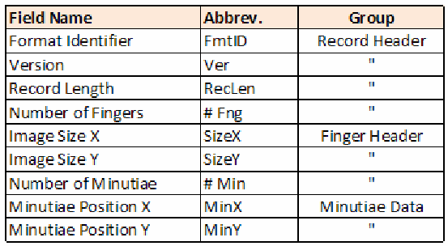
Field Name、Abbrev.、Group の列を持つ表です。Format Identifier（FmtID）、Version（Ver）、Record Length（RecLen）、Number of Fingers（# Fng）は Record Header、Image Size X（SizeX）、Image Size Y（SizeY）、Number of Minutiae（# Min）は Finger Header、Minutiae Position X（MinX）、Minutiae Position Y（MinY）は Minutiae Data のグループです（グループの欄は同上の記号 " で示されています）。
As shown in Table A-2, this is a sample record of three fingers with three, one and two Minutiae Point pairs each. Fields that are not important for this discussion are blank.
表 A-2 に示すように、これは 3 本の指を含むサンプルレコードで、各指にはそれぞれ 3 組、1 組、2 組の Minutiae Point があります。この議論で重要でないフィールドは空欄です。
Table A-2: Sample Record Containing Three Finger Representations
表 A-2: 3 つの指の表現を含むサンプルレコード
Record Header の表で、FmtID、Ver、RecLen、# Fng の列の値は空、2、空、3 です。
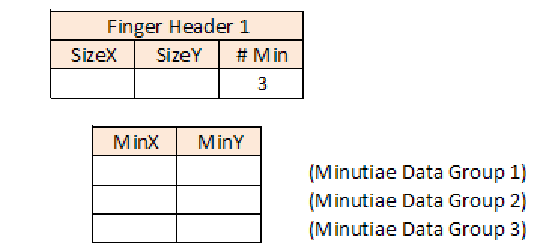
Finger Header 1 の表（SizeX、SizeY、# Min の値は空、空、3）と、その下の MinX・MinY の表（空の 3 行。それぞれに「(Minutiae Data Group 1)」、「(Minutiae Data Group 2)」、「(Minutiae Data Group 3)」のラベル）です。
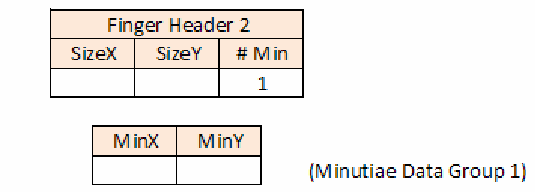
Finger Header 2 の表（SizeX、SizeY、# Min の値は空、空、1）と、その下の MinX・MinY の表（Minutiae Data Group 1 のラベルが付いた空の1行）です。
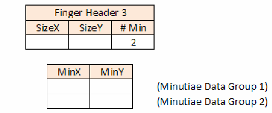
Finger Header 3 の表（SizeX、SizeY、# Min の値は空、空、2）と、その下の MinX・MinY の表（空の 2 行。それぞれに「(Minutiae Data Group 1)」、「(Minutiae Data Group 2)」のラベル）です。
The higher level of abstraction of groups vs. fields has the potential for cleaner, more trustworthy code. Using table-driven logic, the software to test the record should begin with the Record Header. This is much simpler than field-by-field testing:
フィールドよりもグループのほうが抽象度が高いため、より整った、より信頼できるコードが得られる可能性があります。テーブル駆動のロジックを使えば、レコードを試験するソフトウェアは Record Header から始めればよいことになります。これは、フィールドごとの試験よりもはるかに単純です。
The first field should be the Format Identifier.
The next field should be the Version.
The next field should be …
最初のフィールドは Format Identifier であるべきです。
次のフィールドは Version であるべきです。
その次のフィールドは …
This is especially true when the number of fields in a group, say the Minutiae Data group, varies based on a value in a header field. Some groups could have just (X, Y) sets but others may also have angle and quality information. In real-world Modules, some groups may have two fields and others five in different parts of the record.
これは、グループ内のフィールド数、たとえば Minutiae Data グループのフィールド数が、ヘッダーフィールドの値によって変わる場合に特に当てはまります。(X, Y) の組だけを持つグループもあれば、角度と品質の情報も持つグループもあります。実際のモジュールでは、レコードの部分によって、2 つのフィールドを持つグループもあれば、5 つのフィールドを持つグループもあります。
The pseudo code below is for testing the Sample format record using Field Groups.
以下の擬似コードは、Field Group を使って Sample フォーマットのレコードを試験するためのものです。
Check RecordHeader, Exit if bad
Read NumberOfFingers
ForEach NumberOfFingers
{
Check FingerHeader, Exit if bad
Read NumberOfMinutiae
ForEach NumberOfMinutiae
Check MinutiaeDataGroup, Exit if bad
}Flag any remaining fields as Unexpected.
残りのフィールドをすべて Unexpected としてフラグを立てます。
The same structure testing can be done using just the fields, but many more lines of code are needed.
同じ構造試験はフィールドだけを使っても行えますが、はるかに多くのコード行が必要になります。
A.1.2 Post Valid-Structure Processing
A.1.2 有効な構造であることを確認した後の処理
An exciting consequence of separate structure testing is that many other tests become easy to do as a separate pass once the structure is known to be good. Consider testing that every MinX is in range of its SizeX value. If the record structure is known to be good then there are no “orphan MinX” fields; each MinX field “belongs” to a Finger Header that has the SizeX field that applies to the MinX field. The algorithm for SizeX/MinX testing then becomes very simple as illustrated by this pseudo code.
構造試験を切り離して行うことの興味深い帰結は、構造が正しいとわかれば、他の多くの試験を別のパスとして容易に行えるようになることです。すべての MinX がその SizeX 値の範囲内にあるかどうかを試験する場合を考えます。レコード構造が正しいとわかっていれば、「孤立した MinX」フィールドは存在しません。各 MinX フィールドは、その MinX フィールドに適用される SizeX フィールドを持つ Finger Header に「属して」います。そうすると、SizeX/MinX 試験のアルゴリズムは、この擬似コードに示すように非常に単純になります。
ForEach Field
{
If Field is SizeX
Read ValueSizeX
If Field is MinX
{
Read ValueMinX
If ValueMinX >= ValueSizeX
Indicate Error
}
}In the following example a MinX value of 125 occurs twice. The first occurrence is an error because it is larger than its corresponding SizeX value. The second occurrence is valid.
次の例では、MinX の値 125 が 2 回現れます。1 回目は、対応する SizeX の値より大きいためエラーです。2 回目は有効です。
Table A-3: Sample Record Showing an Error During MinX Values
表 A-3: MinX 値の処理中にエラーが生じたサンプルレコード
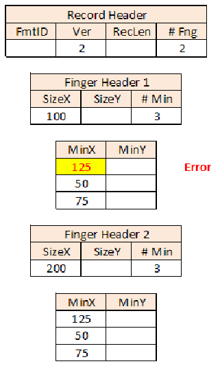
サンプルレコードを小さな表で示しています。Record Header は FmtID が空、Ver が 2、RecLen が空、# Fng が 2 です。Finger Header 1 は SizeX が 100、SizeY が空、# Min が 3 で、その MinX/MinY 表の MinX 値は 125、50、75 です。最初の値 125 は黄色で強調され、赤字で「Error」と表示されています。Finger Header 2 は SizeX が 200、SizeY が空、# Min が 3 で、その MinX/MinY 表の MinX 値は 125、50、75 です（いずれの表でも MinY のセルは空です）。
This is a very simple, made-up format with limited example potential. The principle is valid. In real-world Modules, there are tests that are much easier to perform if the record’s structure is known to be good.
これは、例としての可能性が限られた、非常に単純で作り上げたフォーマットです。原則は有効です。実際のモジュールには、レコードの構造が正しいとわかっていれば、はるかに容易に実行できる試験があります。
Annex B. More About Test Cases
附属書 B. テストケースの詳細
B.1 Background
B.1 背景
CTA Beta 2.0 introduces new, more powerful Test Case features that allow more testing with less effort. This Annex provides information primarily for Module Developers, but it is included in this document because some CTA users may find that the information helps them understand the CTA and associated Conformance Test Suites better.
CTA Beta 2.0 では、より少ない労力でより多くの試験ができる、より強力な新しい Test Case の機能が導入されています。この附属書は主にモジュール開発者向けの情報を提供しますが、CTA の利用者の中にも、この情報が CTA と関連する Conformance Test Suite をよりよく理解する助けになると考える人がいる可能性があるため、この文書に含めています。
Perhaps a made-up scenario will make this section as short and clear as possible. Suppose a Module is being written for a standard that has this text:
作り上げたシナリオを使えば、この節をできるだけ短く明快にできるかもしれません。ある標準に次の文言があり、その標準向けのモジュールを作成しているとします。
The name of the second field shall be “Foo”. It shall be two bytes long and shall have the value 3 (0x 00 03).
第 2 フィールドの名前は「Foo」でなければなりません。その長さは 2 バイトで、値は 3（0x 00 03）でなければなりません。
Ideally, all possible values should be tested, but realistically that cannot be done for non-trivial test Modules. One quickly encounters the “More tests are needed than electrons in the universe” combinatorial condition where the required testing time is measured in geologic eras.
理想的には、取り得るすべての値を試験すべきですが、現実には、複雑な試験モジュールではそれはできません。「宇宙にある電子の数よりも多くの試験が必要になる」という組み合わせ上の状況にすぐに行き当たり、必要な試験時間は地質学的な時代の単位で測られることになります。
Choosing test values is therefore somewhat of an art in which choosing “values likely to fail” is very important. The following are the required Foo value tests, the minimal set of tests necessary to gain confidence that the Module is very likely to handle Foo values properly:
そのため、試験値の選択はある種の技芸であり、「不合格となる可能性が高い値」を選ぶことが非常に重要です。以下は、必須の Foo 値の試験、すなわち、モジュールが Foo 値を適切に扱う可能性が非常に高いと確信するために必要な最小限の試験セットです。
1.Three (3). The expected value must pass.
1.3（Three）。期待される値は合格しなければなりません。
2.Two (2) and four (4). It is important to test values just outside of the range of valid values to make sure they fail.
2.2（Two）と 4（four）。有効な値の範囲のすぐ外側の値を試験して、それらが不合格になることを確認することが重要です。
3.No-bits and all-bits (0x 00 00 and 0x FF FF). Boundaries, the edge conditions that overflow, underflow and signed-vs-unsigned considerations potentially raise havoc. Boundary-bits values should fail.
3.ビットなしとすべてのビット（0x 00 00 と 0x FF FF）。境界値、すなわちオーバーフロー、アンダーフロー、符号付きと符号なしの違いに関する考慮事項が引き起こしうる大混乱の端にあたる条件です。境界ビットの値は不合格になるべきです。
The 5 test values (3, 2, 4, 0x 00 00 and 0x FF FF) are sufficient to test this feature, provided that a competent programmer wrote software that is intended to work. Additional strategies are needed to protect against malicious code.
この機能を試験するには、5 つの試験値（3、2、4、0x 00 00、0x FF FF）で十分です。ただし、有能なプログラマーが、動作するつもりでソフトウェアを書いたことが前提です。悪意のあるコードから保護するには、追加の方策が必要です。
Therefore, a minimum of five values should be tested in this example: 3, 2, 4, 0x 00 00 and 0x FF FF. Only one value (3) should pass and the rest should fail. Prior to CTA Beta 2.0, these five test values required five different, complete Test Cases. They could not be combined in a single Test Case because they required a complete record. Over time the following problems were noted.
したがって、この例では、少なくとも 5 つの値、すなわち 3、2、4、0x 00 00、および 0x FF FF を試験すべきです。合格すべき値は 1 つ（3）だけで、残りは不合格になるべきです。CTA Beta 2.0 より前は、これら 5 つの試験値に、それぞれ異なる完全な Test Case が 1 つずつ必要でした。完全なレコードが必要だったため、1 つの Test Case にまとめることはできませんでした。時間がたつにつれて、次の問題が指摘されました。
1.Developing Test Cases was a slow process. Each Test Case had to pass all the Module’s tests with the exception of the specific error desired (e.g., having all fields passed but Format ID would be a failing Test Case for Format ID). Therefore, each Test Case was essentially a complete record, with at least the minimum number of fields.
1.Test Case の開発に時間がかかりました。各 Test Case は、目的とする特定のエラーを除くモジュールのすべての試験に合格しなければなりませんでした（たとえば、Format ID 以外のすべてのフィールドが合格する場合、それは Format ID に対する不合格の Test Case になります）。そのため、各 Test Case は実質的に、少なくとも最小限の数のフィールドを持つ完全なレコードでした。
2.Test Case maintenance was an issue. Each Test Case had to pass all Module tests or all-but-one test if it was testing for failure. Since the Module and its Test Cases were developed side by side as the project progressed, it was fairly common for a new test in the Module to break a number of existing Test Cases.
2.Test Case の保守が問題でした。各 Test Case は、モジュールのすべての試験に合格するか、不合格の試験の場合は 1 つを除くすべての試験に合格しなければなりませんでした。モジュールとその Test Case はプロジェクトの進行に合わせて並行して開発されたため、モジュールに新しい試験を加えると、既存の多数の Test Case が動作しなくなることがかなりよくありました。
3.Test Cases were obscure. Since the one field in error was just another field in a list of 20, 30 or 50 fields, it did not stand out in any way. The purpose of the Test Case could not be determined by superficial examination.
3.Test Case がわかりにくいものでした。誤りのある 1 つのフィールドは、20 個、30 個、50 個のフィールドの一覧の中の 1 つのフィールドにすぎないため、何も目立つところがありませんでした。Test Case の目的は、ざっと調べただけではわかりませんでした。
4.At one point there were so many Test Cases developed for a Module that they had to be put in separate folders because the standard Windows® “Open File” dialog box, in Microsoft® Windows® XP Professional, could not open all of them at the same time.
4.あるとき、モジュール向けに開発した Test Case があまりに多くなったため、Microsoft® Windows® XP Professional の標準の Windows® の「ファイルを開く」ダイアログボックスではすべてを同時に開けず、別々のフォルダーに分けなければならなくなりました。
5.There were so many Test Cases that there was a “Cannot see the forest for the trees” problem. It was hard to look at the list of Test Cases and determine “Test Coverage”, that is, whether or not the existing Test Cases tested every desired test scenario.
5.Test Case があまりに多かったため、「木を見て森を見ず」の問題がありました。Test Case の一覧を見て、「テストカバレッジ」、すなわち既存の Test Case が、必要なすべての試験シナリオを試験しているかどうかを判断することが困難でした。
B.2 Characteristics of the Test Cases Implemented in CTA Beta 2.0
B.2 CTA Beta 2.0 に実装されたテストケースの特性
The Modules supported by the previous CTA version were “internally modular.” That is, the code that tested that Foo=3 was separate from the code that checked that Foo was the 2nd field, which was itself separate from code that made sure the Foo field only occurred once. Different parts of the code tested different characteristics of the data. Test Cases had always run all tests in the module, but changes could be made to allow the Module to run only some of its tests, and to allow the passing of a “flag value” to the Module to determine which code paths to run and which tests to perform.
以前の CTA バージョンがサポートするモジュールは、「内部的にモジュール化」されていました。つまり、Foo=3 であることを試験するコードは、Foo が第 2 フィールドであることを検査するコードとは別であり、そのコードもまた、Foo フィールドが 1 回しか現れないことを確認するコードとは別でした。コードの異なる部分が、データの異なる特性を試験していました。Test Case は常にモジュール内のすべての試験を実行していましたが、モジュールがそれらの試験の一部だけを実行できるようにし、どのコードパスを実行してどの試験を行うかを決める「フラグ値」をモジュールに渡せるようにする変更が可能でした。
In this CTA version, each module has associated Test Cases that "prove" that they work with a wide variety of data. The Test Cases allowed the developers to, if you will, “hammer loud and long” on the code, thoroughly chasing away all bugs. If and when more bugs were found, one or more Test Cases were created to show they have been fixed. These errors were not expected to reappear since all Test Cases were run before a Module was released.
この CTA バージョンでは、各モジュールに、幅広い種類のデータで動作することを「証明」する Test Case が関連付けられています。Test Case により、開発者は、いわば「大きな音で長く叩き続ける」ようにコードを徹底的に調べ、すべてのバグを追い払うことができました。さらにバグが見つかったときには、それらが修正されたことを示す Test Case が 1 つ以上作成されました。モジュールの公開前にすべての Test Case が実行されたため、これらのエラーは再発しないと見込まれました。
Continuing the Foo scenario, it is suggested that Module developers support the “Data Only” type of Test Case testing, and implement Modules in such as way as to only call the value-testing parts of the code. In “Data Only” testing the code that makes sure Foo is the second field or the code that makes sure Foo occurs but once are not addressed in the Test Case (this tests data only without testing the relationship between fields and the structure). These are tested under testing types such as “Complete”, “Structure”, or “Partial”. Just fields’ data values are tested and all the structural considerations are ignored. As shown in Table B-1, doing this allows a single Test Case to test all five values discussed above.
Foo のシナリオを続けると、モジュール開発者は、「Data Only」型の Test Case 試験をサポートし、コードのうち値を試験する部分だけを呼び出すようにモジュールを実装することが推奨されます。「Data Only」試験では、Foo が第 2 フィールドであることを確認するコードや、Foo が 1 回しか現れないことを確認するコードは、Test Case では扱われません（これは、フィールド間の関係や構造を試験せずに、データだけを試験します）。これらは、「Complete」、「Structure」、「Partial」などの試験型で試験されます。フィールドのデータ値だけが試験され、構造に関する考慮事項はすべて無視されます。表 B-1 に示すように、こうすることで、上で論じた 5 つの値すべてを、1 つの Test Case で試験できます。
Table B-1 – Test Case Results
表 B-1 – テストケースの結果
| Test Number | Field Name | Value | Expected Test Result |
|---|---|---|---|
| 1 | Foo | 3 | Pass |
| 2 | Foo | 2 | Fail |
| 3 | Foo | 4 | Fail |
| 4 | Foo | 0x 00 00 | Fail |
| 5 | Foo | 0x FF FF | Fail |
| 試験番号 | フィールド名 | 値 | 期待される試験結果 |
|---|---|---|---|
| 1 | Foo | 3 | 合格 |
| 2 | Foo | 2 | 不合格 |
| 3 | Foo | 4 | 不合格 |
| 4 | Foo | 0x 00 00 | 不合格 |
| 5 | Foo | 0x FF FF | 不合格 |
When the Module returns these results, the developer can save this Test Case so that it “Passes” whenever it is tested and the Module returns these exact errors. The Test Case can be run anytime during the Module’s lifetime to ensure Foo’s value is handled correctly by the Module.
モジュールがこれらの結果を返したとき、開発者はこの Test Case を保存しておけば、試験のたびに、モジュールがまさにこれらのエラーを返す限り「合格」になります。この Test Case は、モジュールの存続期間中いつでも実行して、Foo の値がモジュールによって正しく扱われていることを確認できます。
A real worth of Test Case Types is in limiting the Errors returned to those of interest.
Test Case の型の真の価値は、返されるエラーを関心のあるものに限定できることにあります。
It is suggested that Module developers adopt a Test Case naming convention that conveys maximum understanding by simply looking at the Test Case names. Below is a partial list of the Test Cases developed for a NIST/ITL CTS Module. Though there are fewer than 100 Test Cases, confidence is high that the Module performs as expected.
モジュール開発者は、Test Case の名前を見るだけで最大限の理解が得られるような、Test Case の命名規則を採用することが推奨されます。以下は、NIST/ITL CTS モジュール向けに開発された Test Case の一部の一覧です。Test Case は 100 件未満ですが、モジュールが期待どおりに動作するという確信は高いものです。
L1-02-PassFail-Format Identifier.xml3
L1-02-PassFail-Version.xml
L1-03-L2-PassFail-Record Length.xml
L1-04-PassFail-CBEFF PID Owner.xml
L1-05-Pass-CBEFF PID Type.xml
L1-06-07-Pass-CaptureEquipment.xml
L1-08-Pass-ImageSizeX.xml
L1-09-Pass-ImageSizeY.xml
...
L1-42-PassFail-Delta Angle 1.xml
L1-43-PassFail-Delta Angle 2.xml
L1-44-PassFail-Delta Angle 3.xml
L2-CoreDelta-01 Fail No XData Area.xml
L2-CoreDelta-02 Fail Not XDAType.xml
L2-CoreDelta-03 Fail XDAType Not CoreDelta.xml
L2-CoreDelta-04 Fail Not CoreInfType_Num.xml
...
L2-RidgeCount-01 Fail No XData Area.xml
L2-RidgeCount-02 Fail Not XDAType.xml
L2-RidgeCount-03 Fail Not RidgeCount.xml
L2-RidgeCount-04 Fail Missing XDAL.xml
...
L2-XDLen 04 - Orphan XDAL.xml
L2-XDLen 05 - Len Err.xml
L2-XDLen 06 - Pass Multiple XDALs.xml
L2-XDLen 07 - Zero len XDAL Passes.xml
L2-XDLen 08 - Zero len XDAL Orphan.xmlLevel 1 tests are named, “L1 - FieldNumber(s) – Results – FieldName”.
Level 2 tests are named, “L2 - FieldsGroup – Counter Other-Information.”
The Test Case “L1-03-L2-PassFail-Record Length.xml” is an exception. It is both possible and desirable for the field Record Length to perform both Level 1 testing (“Is the value in the allowable range?”) and Level 2 testing (“Does the value match the number of bytes read?”) at the same time in the same block of code. The Test Case name, therefore, reflects both L1 and L2 testing.
レベル 1 の試験は「L1 - FieldNumber(s) – Results – FieldName」という名前になります。
レベル 2 の試験は「L2 - FieldsGroup – Counter Other-Information.」という名前になります。
Test Case「L1-03-L2-PassFail-Record Length.xml」は例外です。Record Length フィールドについては、レベル 1 の試験（「値は許容範囲内か」）とレベル 2 の試験（「値は読み取ったバイト数と一致するか」）の両方を、同じコードブロック内で同時に実行できますし、そうすることが望ましいです。したがって、この Test Case の名前は、L1 と L2 の両方の試験を反映しています。
In summary, CTA Beta 2.0’s Test Cases provide an excellent mechanism for thoroughly testing CTS Modules.
要約すると、CTA Beta 2.0 の Test Case は、CTS モジュールを徹底的に試験するための優れた仕組みを提供します。
Annex C - High Level Sequence Diagrams
附属書 C - 上位レベルのシーケンス図
Three operations involve all the CTA components. They are initialization, testing and decoding.
CTA のすべての構成要素が関与する操作が 3 つあります。初期化、試験、デコードです。
C.1 Initialization
C.1 初期化
The diagram in Figure C-1 illustrates the initialization process.
図 C-1 は、初期化プロセスを示しています。
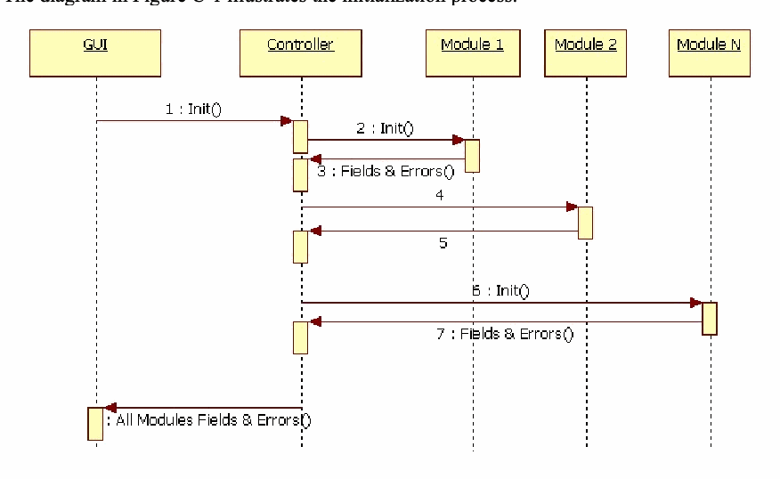
GUI、Controller、Module 1、Module 2、Module N の生存線を持つシーケンス図です。メッセージ: 1: GUI から Controller へ Init()、2: Controller から Module 1 へ Init()、3: Module 1 から Controller へ Fields & Errors()、4: Controller から Module 2 へ、5: Module 2 から Controller へ、6: Controller から Module N へ Init()、7: Module N から Controller へ Fields & Errors()、Controller から GUI へ「All Modules Fields & Errors()」が返ります。
Figure C-1: Initialization Process
図 C-1: 初期化プロセス
Note: "4" and "5" are the same as "2" and "3".
注: "4" と "5" は "2" と "3" と同じです。
The GUI initializes the Controller, expecting to receive information about all available Modules. The controller loads each Module it finds, receiving from each Module the Module’s type, its fields and the list of errors it can find as part of its testing. The Controller consolidates this information, returning to the GUI a list of all loaded Modules, their fields and their errors.
GUI は、利用可能なすべてのモジュールに関する情報を受け取ることを期待して、コントローラーを初期化します。コントローラーは、見つけた各モジュールをロードし、各モジュールから、そのモジュールの種類、フィールド、および試験の一環として見つけられるエラーの一覧を受け取ります。コントローラーはこの情報をまとめ、ロードされたすべてのモジュールとそのフィールドおよびエラーの一覧を GUI に返します。
C.2 Testing
C.2 試験
The diagram in Figure C-2 illustrates the testing process. This is the “behind the scenes” process called by a number of separate GUI operations: testing binary files with a Manifest, testing a Manifest or Test Case individually on the “Builder Tab”, and testing a number of Test Cases at the same time.
図 C-2 は、試験プロセスを示しています。これは、複数の個別の GUI 操作から呼び出される「舞台裏」のプロセスです。具体的には、Manifest によるバイナリファイルの試験、「Builder Tab」での Manifest または Test Case の個別の試験、および複数の Test Case の同時試験です。
The Controller gets the request from the GUI and calls up to three modules (i.e., SBH, BDB SB). See Annex D, More on Biometric Information Records. The Controller gets the list of errors from each module, consolidates the errors into a single Error List and returns it to the GUI. When the GUI receives the results, it interprets the Error List and informs the user. For example, an Error List with four items would indicate failure of a Manifest + Binary File test, but it could be a success if the test was a Test Case and the four errors matched the expected errors.
コントローラーは GUI から要求を受け取り、最大 3 つのモジュール（すなわち SBH、BDB、SB）を呼び出します。附属書 D「Biometric Information Records の詳細」を参照してください。コントローラーは各モジュールからエラーの一覧を受け取り、それらのエラーを 1 つの Error List にまとめて GUI に返します。GUI は結果を受け取ると、Error List を解釈して利用者に知らせます。たとえば、4 件の項目を持つ Error List は、Manifest + Binary File の試験の失敗を示しますが、試験が Test Case であり、4 つのエラーが期待されるエラーと一致した場合は成功を示すことがあります。
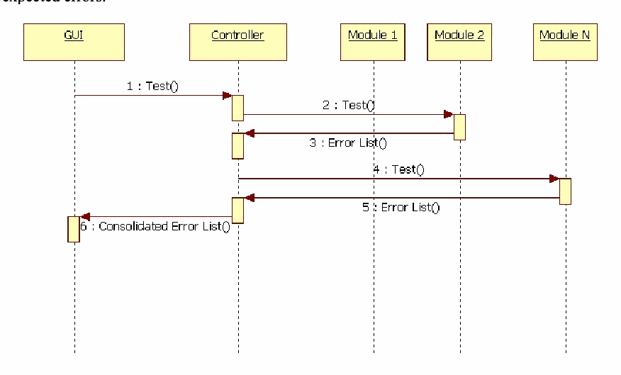
GUI、Controller、Module 1、Module 2、Module N の生存線を持つシーケンス図です。1: GUI から Controller へ Test()、2: Controller から Module 2 へ Test()、3: Module 2 から Controller へ Error List()、4: Controller から Module N へ Test()、5: Module N から Controller へ Error List()、6: Controller から GUI へ Consolidated Error List() が返ります。
Figure C-2: The Testing Process
図 C-2: 試験プロセス
C.3 Decoding
C.3 デコード
As stated above, Decoding refers to an analysis operation performed by a Module. The input is binary (an array of bytes) and the output is an array of Fields that correspond to the binary input.
前述のとおり、デコードは、モジュールが行う分析操作を指します。入力はバイナリ（バイトの配列）で、出力は、そのバイナリ入力に対応する Field の配列です。
In most GUI operations the Decode operation is immediately followed by a Test operation, without any further user intervention. Put another way, to Decode a binary file is to develop or discover its structure.
ほとんどの GUI 操作では、Decode 操作の直後に、利用者のそれ以上の介入なしに Test 操作が続きます。言い換えると、バイナリファイルをデコードするとは、その構造を作成するか発見することです。
The diagram in Figure C-3 illustrates the decoding process. The GUI sends the Controller an array of bytes. The Controller calls the proper Module, passing it the array of bytes. (CTA Beta 2.0 calls one Module as part of a Decode operation.) The Module passes back to the controller the array of Fields as determined by specific values in the byte array. The Controller returns the array of Fields to the GUI. For most operations in the GUI, the GUI immediately calls the Controller to perform a Test operation on that same array of Fields.
図 C-3 は、デコードプロセスを示しています。GUI はコントローラーにバイトの配列を送ります。コントローラーは適切なモジュールを呼び出し、そのバイトの配列を渡します。（CTA Beta 2.0 は、Decode 操作の一環として 1 つのモジュールを呼び出します。）モジュールは、バイト配列の特定の値によって決定された Field の配列をコントローラーに返します。コントローラーは Field の配列を GUI に返します。GUI のほとんどの操作では、GUI はすぐにコントローラーを呼び出して、同じ Field の配列に対する Test 操作を実行します。
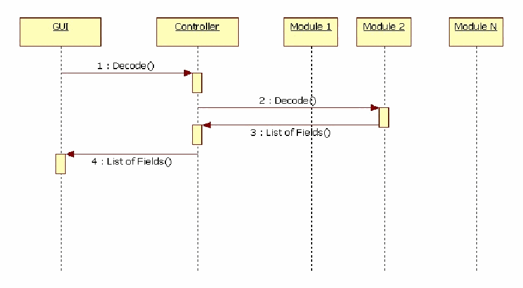
GUI、Controller、Module 1、Module 2、Module N の生存線を持つシーケンス図です。1: GUI から Controller へ Decode()、2: Controller から Module 2 へ Decode()、3: Module 2 から Controller へ List of Fields()、4: Controller から GUI へ List of Fields() が返ります。
Figure C-3: The Decoding Process
図 C-3: デコードプロセス
Annex D - More on Biometric Information Records
附属書 D - Biometric Information Record の詳細
The Common Biometric Exchange Formats Framework (CBEFF) standards describe a set of data elements and values to support biometric data records in a common way. These data elements can be encoded in a record header that facilitates exchange of biometric data between different system components or between systems. The CBEFF standards provide forward compatibility for technology improvements and allow creation of new patron formats (instantiations of CBEFF). The BIR structure defined by CBEFF supports security (digital signatures and data encryption), processing information and descriptive attributes of the biometric data.
Common Biometric Exchange Formats Framework（CBEFF）標準は、生体データレコードを共通の方法でサポートするためのデータ要素と値の集合を記述しています。これらのデータ要素は、異なるシステム構成要素間、またはシステム間での生体データの交換を容易にするレコードヘッダーにエンコードできます。CBEFF 標準は、技術改善に対する前方互換性を提供し、新しいパトロン形式（CBEFF の具体化）の作成を可能にします。CBEFF が定義する BIR 構造は、セキュリティ（デジタル署名とデータ暗号化）、処理情報、および生体データの記述的な属性をサポートします。
The CBEFF record defines three components in a single structure:
CBEFF レコードは、1 つの構造の中に 3 つの構成要素を定義します。
1.The SBH (Standard Biometric Header) includes the data elements (required and optional) that describe the biometric data's structure and selected attributes (metadata) of its content. These include the appropriate standardized data elements and values defined by CBEFF, and may also include data elements and values defined by a patron format specification to satisfy unique requirements.
1.SBH（Standard Biometric Header）は、生体データの構造と、その内容の選択された属性（メタデータ）を記述するデータ要素（必須および任意）を含みます。これらには、CBEFF が定義する適切な標準化されたデータ要素と値が含まれ、また、独自の要件を満たすために patron format 仕様が定義するデータ要素と値が含まれることもあります。
2.The BDB (Biometric Data Block) contains the biometric data. It can contain processed or unprocessed data. A BDB typically conforms to a standardized data interchange format such as the formats developed by INCITS M1 [2] or JTC 1/SC 37 [5] but could – alternatively – contain a proprietary data structure. Fields in the SBH specifically identify the BDB format and other metadata so the biometric application can pass the BIR or the BDB content to the correct biometric processing module.
2.BDB（Biometric Data Block）は、生体データを含みます。処理済みのデータも未処理のデータも含むことができます。BDB は通常、INCITS M1 [2] や JTC 1/SC 37 [5] が策定したフォーマットなどの標準化されたデータ交換フォーマットに適合しますが、代わりに独自のデータ構造を含むこともあります。SBH のフィールドは、BDB のフォーマットとその他のメタデータを具体的に識別するため、生体認証アプリケーションは、BIR または BDB の内容を正しい生体処理モジュールに渡すことができます。
3.The SB (Security Block) can contain a digital signature, message authentication code (MAC), or algorithm identifier information and parameters required for applying integrity and encryption processes to the BDB. CBEFF requires that the SBH not be encrypted, although it can be covered by integrity algorithms. As with the BDB format, the SB format is defined by an SB "owner" and can be adapted to the specific requirements of an application or system. Fields in the SBH identify the SB format to guide integrity checking of the entire BIR and to support appropriate decryption of the BDB.
3.SB（Security Block）は、デジタル署名、メッセージ認証コード（MAC）、またはアルゴリズム識別子の情報と、BDB に完全性処理と暗号化処理を適用するために必要なパラメータを含むことができます。CBEFF は、SBH を暗号化しないことを要求します（SBH を完全性アルゴリズムの対象とすることはできます）。BDB のフォーマットと同様に、SB のフォーマットは SB の「所有者」によって定義され、アプリケーションやシステムの具体的な要件に合わせて調整できます。SBH のフィールドは、BIR 全体の完全性検査を導くため、および BDB の適切な復号を支えるために、SB のフォーマットを識別します。
As discussed in the introduction, CTA Beta 2.0 supports CTSs to test implementations of biometric data interchange data formats as well as implementations of the three components of CBEFF Biometric Information Records (BIRs).
はじめにで論じたとおり、CTA Beta 2.0 は、生体データ交換フォーマットの実装と、CBEFF Biometric Information Records（BIR）の 3 つの構成要素の実装を試験する CTS をサポートします。
Annex E- References
附属書 E - 参考文献
[1] INCITS M1 – Biometrics Public Homepage - http://standards.incits.org/a/public/group/m1
[1] INCITS M1 – Biometrics Public Homepage - http://standards.incits.org/a/public/group/m1
[2] Published Biometric American National Standards Developed by INCITS M1 as of September 2010 - http://www.incits.org/tc_home/National_Standards_Published_as_of_09_08_2010.pdf
[2] Published Biometric American National Standards Developed by INCITS M1 as of September 2010 - http://www.incits.org/tc_home/National_Standards_Published_as_of_09_08_2010.pdf
[3] ANSI/NIST-ITL Standards Homepage – http://www.nist.gov/itl/iad/ig/ansi_standard.cfm
[3] ANSI/NIST-ITL Standards Homepage – http://www.nist.gov/itl/iad/ig/ansi_standard.cfm
[4] ISO/IEC JTC1/SC 37 – Biometrics Public Homepage - http://www.iso.org/iso/jtc1_sc37_home
[4] ISO/IEC JTC1/SC 37 – Biometrics Public Homepage - http://www.iso.org/iso/jtc1_sc37_home
[5] Published Biometric International Standards Developed by ISO/IEC JTC 1/SC 37 – Biometrics as of September 2010 - http://www.incits.org/tc_home/International_Standards_Published_as_of_09_08_2010.pdf
[5] Published Biometric International Standards Developed by ISO/IEC JTC 1/SC 37 – Biometrics as of September 2010 - http://www.incits.org/tc_home/International_Standards_Published_as_of_09_08_2010.pdf
[6] BioAPI Conformance Test Suite and associated documentation download - http://www.itl.nist.gov/div893/biometrics/BioAPI_CTS/index.htm.
[6] BioAPI Conformance Test Suite and associated documentation download - http://www.itl.nist.gov/div893/biometrics/BioAPI_CTS/index.htm.
[7] Conformance Test Architecture for Biometric Information Records and CBEFF Patron Format A Conformance Test Suite - http://www.itl.nist.gov/div893/biometrics/CBEFF_PFA_CTS/index.htm.
[7] Conformance Test Architecture for Biometric Information Records and CBEFF Patron Format A Conformance Test Suite - http://www.itl.nist.gov/div893/biometrics/CBEFF_PFA_CTS/index.htm.
[8] NIST/ITL Conformance Test Architecture (CTA) and Test Suites (CTSs) for Biometric Data Interchange Formats and Biometric Information Records Beta Implementation V2.0 Homepage - http://www.nist.gov/itl/csd/biometrics/biocta_download.cfm
[8] NIST/ITL Conformance Test Architecture (CTA) and Test Suites (CTSs) for Biometric Data Interchange Formats and Biometric Information Records Beta Implementation V2.0 Homepage - http://www.nist.gov/itl/csd/biometrics/biocta_download.cfm
[9] NIST’s Biometric Resource Center: http://www.nist.gov/itl/csd/biometrics/
[9] NIST’s Biometric Resource Center: http://www.nist.gov/itl/csd/biometrics/